Jelling 2 - Harald - Letztes Update 13.03.2025
Listennummer : DR 42 / DK SJy 11
Navidaten: 55.75673 9.41972 oder: Thyrasvej 1, 7300 Jelling :
Transliteration: Seite A: haraltr : kunukR : baþ : kaurua | kubl : þausi : aft : kurm faþur sin | auk aft : þąurui : muþur : sina : sa | haraltr (:) ias : sąR : uan : tanmaurk
Seite B: ala : auk nuruiak
Seite C: (:) auk t(a)ni (k)(a)(r)(þ)(i) kristną
Es handelt sich hier um das bedeutendste dänische Runendenkmal, das im Auftrag von König Harald Blauzahn, dem Sohn und Nachfolger von König Gorm der Alte errichtet wurde. Gleichzeitig ist er auch der größte Runenstein der Welt.
Der Anfang der Inschrift - in horizontalen Linien geschrieben und wird wie der Text eines Buches von links nach rechts gelesen - erinnert an den kleinen Stein von Jelling. Jedoch werden neben dem Gedenken an die Eltern mit besonderer Betonung Haralds eigene Taten erwähnt. Diese Großtaten versucht man nun mit den historischen Tatsachen zu verbinden, um dadurch eine Datierung zu gewinnen: 1. Harald christianisierte die Dänen. Das Datum von Haralds Taufe schwankt um die Mitte des 10. Jahrhunderts; 2. Harald bezwang Norwegen, als er 970 den norwegischen König Harald Graumantel besiegte; 3. Die Einigung Dänemarks durch Harald verbindet man mit der Einnahme des Danewerks und Haithabus im Jahre 983. Für die Datierung ergab sich darüber auf jeden Fall ein relativ großer Spielraum: ca. 950-985. Das hat sich in den letzten Jahren über naturwissenschaftliche / dendrochronologische Datierungen deutlich geändert. Die Errichtung wird darüber nun zw. 965-970 angenommen.
Der Stein aus Gneis, der 243 cm über dem Erboden emporagt, hat auf seinen drei Seiten die Breite von 290 cm - Textseite / von 162 cm - Tierseite / von 158 cm - Christusseite - und ein Gewicht von ca. 11,5 Tonnen!
Die Seiten B und C tragen große Bilddarstellungen. Die Seite B, auch Drachenseite genannt, zeigt einen Vierfüßler und eine Schlange, wahrscheinlich im Kampf. Deutungen sind mehrfach versucht worden: der Kampf des Guten (Neuen, des Christentums) mit dem Bösen (Alten, dem Heidentum). Eine Deutung als Löwe und Schlange im Kampf bezogen auf den darunter stehenden Text überzeugt kaum. Das große Tier, das angelsächsische Vorbilder hat, kehrt oft auf Runendenkmälern und anderen Gegenständen wieder. Dieses Tier ist von der Nackenspitze zum untersten Fußzeh 124 cm und von der vordersten Tatzenspitze zum hintersten Bein 115 cm groß.
Die Seite C, auch Christusseite genannt, gilt als älteste Darstellung Christi im Norden. Wenn in der Komposition auch heidnische (Odin am Baum) und christliche Vorstellungen zusammengeflossen zu sein scheinen, wird die Interpretation Christus am Lebensbaum kaum fehlgehen. Unter dem Christusbild verläuft die Inschrift und machte die Dänen zu Christen. Die Christusfigur ist 130 cm hoch und misst von Arm zu Arm 111 cm. Aufgrund dessen wir dieser Runenstein auch oft als der Taufschein Dänemarks bezeichnet.
Dieses Bildnis befand sich auf der ersten Innenseite des dänischen Reisepasses ab 1997 und auch die "Tierseite" wurde darin wiedergegeben (Quelle: https://www.papertotravel.com/topic/node/11)! In der neuen Generation - seit 01.10.2021 - wird das rechts eingestellte Bild verwendet (Quelle: https://politi.dk/lov-og-information/pas/ny-producent-af-danske-pas).
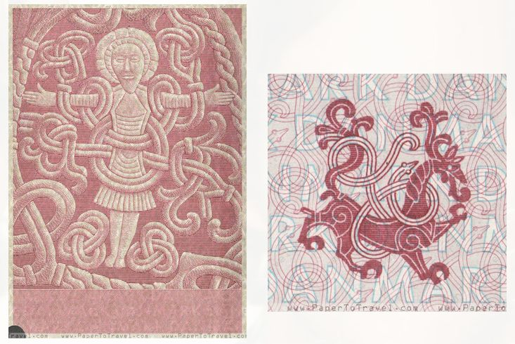
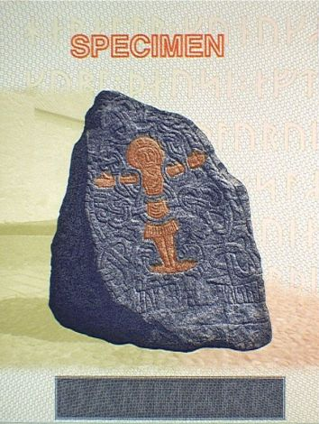
Die waagrechte Anbringung der Runenbänder - kommt davor und danach auf keinem anderen dänischen Runenstein vor - die Einführung der in der dänischen Ornamentik unbekannten Blätterverzierung und die Reliefbehandlung selbst, Eigenschaften, die alle drei mit der englischen Ornamentik übereinstimmen, machen es in Verbindung mit den ausgesprochen nordischen Elementen der Ornamentik wahrscheinlich, dass der Schöpfer des prachtvollen Steins ein dänisch-englischer Künstler war. Die Inschrift liest sich von der Textseite - von oben nach unten, von links nach rechts - über die Tierseite und abschließend die Christusseite.
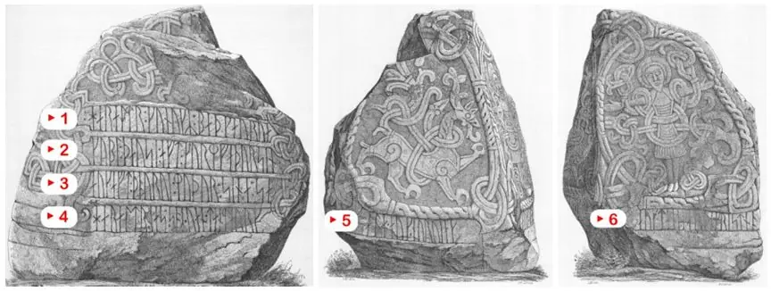
Bildquelle: Zeichnung von Magnus Petersen im Juli 1878Zur Bedeutung des Beinamen "Blauzahn"
"König Harald wird in der historischen Literatur in der Regel nicht mit seinem Patronymikon Gormsson, sondern mit dem Beinamen Blauzahn benannt. Der Beiname ist zeitgenössisch nicht bezeugt. Er fehlt sowohl auf dem Runenstein II von Jelling als auch auf dem Runenstein I von Sønder Vissing, den Haralds Frau Tova errichten ließ und auf dem Harald als 'der Gute' bezeichnet wird. "Blátǫnn" - 'Blauzahn' fehlt mit einer Ausnahme auch in allen westnordischen Texten bis in das 14. Jahrhundert. Nur im Ágrip af Nóregs konunga sögum, das um 1190 verfaßt wurde und in einer einzigen Handschrift des frühen 13. Jahrhunderts vorliegt (AM 325 II 4 to) , ist einmal von Haraldr Blátǫnn die Rede. Das ist bemerkenswert, da Beinamen anderer Dänen wie z.B. tiugguskegg 'Gabelbart' für Haralds Sohn Sven oder Gull-Harald für Harald Knútsson in den westnordischen Texten des 12./13. Jahrhunderts durchaus zitiert werden.
Auch im Dänischen ist die Überlieferung zunächst schmal. Obwohl Saxo Grammaticus (*1160 - 1220) sehr viele Beinamen historischer Personen in seine Gesta Danorum aufnahm, sucht man in ihnen blátǫnn vergebens. In Dänemark war der Beiname um 1200 also nicht sehr bekannt. Um so wichtiger ist die Ersterwähnung des Namens im Chronicon Roskildense, der ältesten lateinisch geschriebenen Chronik in Dänemark aus der Zeit um 1140. Ihr Autor benützte für die Darstellung des 10. und früheren 11. Jahrhunderts die Hamburger Kirchengeschichte des Adam und mündliche Traditionen. Für die Könige Gorm Harald Sven griff er auf den Bremer Chronisten zurück, stellte ihnen aber eine weitere Königsreihe Gorm Harald Blatan Sven voraus. Die Verdoppelung der Reihe Gorm Harald Sven zeigt, daß das Chronicon hier verschiedene Quellen kannte, sie aber nicht miteinander harmonisierte. Der Beiname Blatan stammt dabei sicherlich aus der mündlichen dänischen Tradition. Den Beinamen verwenden dann auch Sven Aggesen (*um 1140 bis 1150; nach 1186) Ende des 12. Jahrhunderts und einige spätmittelalterliche dänische Texte; seit dem 14. Jahrhundert ist er auch öfter in westnordischen Handschriften anzutreffen.
Nirgends wird der Beiname erklärt; daß er im späten 12. Jahrhundert bereits unverständlich war, darauf deutet die Glossierung Blatan id est dens lividus vel niger (Google Übersetzung: Blatan ist ein gequetschter oder schwarzer Zahn) in der Genealogia Regum Danorum des Abtes Wilhelm (geschrieben um 1194). Was blátǫnn aber bedeutete, ist an einer westnordischen Überlieferung unzweifelhaft zu erkennen. In einer Fornaldarsaga des 14. Jahrhunderts, der Þórsteins saga Víkingssonar, wird von einem Biorn blátǫnn berichtet, er habe einen langen Zahn besessen, der ihm eineinhalb Ellen aus dem Mund ragte und mit dem er im Kampf seine Gegner tötete. Daß es sich hier um eine partielle Ebergestalt des Helden handelt, zeigt die Saga an Biorns Bruder Ingialdr trana. Ingialdr besaß die Gabe, sich im Kampf in einen Eber zu verwandeln. Dazu fügt sich der Beiname trana des Ingialdr, der wohl nicht zu aisl. trana 'Kranich', sondern zu nisl. trani 'Rüssel', norw. tran 'Schnauze' gehört. Der sagenhafte, eberartige Held, der einen 'Kampfzahn' besitzt, das ist aus dem Nordischen keine unbekannte Vorstellung. Bemerkenswert ist an dieser Stelle vor allem der Nachweis, daß auch 'Blauzahn' zu diesem Vorstellungsbereich gehört.
Es gibt noch eine
weitere Stelle, die in diese Richtung deutet. In der
Landnámabók
wird einem Isländer Borkr der Doppelbeiname
blátannarskegg 'Blauzahnbart' zugelegt, und dieser Borkr stammt
aus einer Familie, von der man annahm, daß sie die Fähigkeit zum
'Gestaltentausch', zur ekstatischen Verwandlung besaß. Es ist nicht klar, wie
das Farbadjektiv blár im Kompositum blátonn zu
werten ist. Das Wortfeld der altskandinavischen Farbbezeichnungen ist semantisch
etwas anders strukturiert als im Deutschen. Blár scheint
Farbwerte von 'Blau' über 'dunkle Farbe' bis zu 'Schwarz' signalisiert, in
Einzelfällen auch 'metallisch glänzend' bedeutet zu haben. Auf welchen präzisen
Farbwert sich blár in blátǫnn bezog, ist also
zunächst nicht auszumachen. Eberhauer haben eine gelbe bis schmutzig-gelbe,
braun-graue Färbung, je nach dem Grad der durch das
Wühlen der Hauer in der
Erde verursachten Verschmutzung. Auf Naturbeobachtung scheint demnach
die Bezeichnung 'Blauzahn' oder 'Schwarzzahn'
nicht zu beruhen. Einleuchtender ist da schon gulltǫnn
'Goldzahn', Beiname eines gewissen Halfdán in der
Ynglinga saga, der wohl auch mit Ebersymbolik
zusammenhängt. Ist blátonn kein von der Naturbeobachtung her motiviertes Wort,
so könnte an blár als Odins- und Ekstatikerfarbe gedacht
werden. Vielleicht bezog sich blátǫnn aber ursprünglich auf
Ebermaskierung und bezeichnete die aus Metall gefertigten Hauer".
Bedeutungsgeschichtlich ist der Übergang von Maskenbezeichnungen auf das von den
Masken Dargestellte mehrfach bezeugt. Wie es sich dabei auch verhält, für die
Interpretation von Harald Gormssons Beinamen kann die
Geschichte der Þórsteins saga nicht beiseite
gelassen werden. Man muß annehmen, daß der Glaube bestand, Harald habe als
Zeichen seines 'eberartigen' Wesens einen 'Kampfzahn* besessen. Das ist derselbe
Glaube, der sich auch mit Haralds sagenhaftem Vorgänger und dem Odin geweihten
Dänenkönig Harald Hiltitan ('Kampfzahn') verband, von dessen
historischer Existenz und gewaltigen Heldentaten die Dänen im 10. Jahrhundert
sicher überzeugt waren. Was für Harald hier angenommen wird, entspricht dem, was
heidnischen Vorstellungen verhaftete Franken des 7. Jahrhunderts von ihren
Königen erzählten: daß den Merowingern Schweinsborsten am Rücken gewachsen
seien. Wurde das Motiv der königlichen Ebernatur auf Harald Gormsson
übertragen, dann gewinnt auch die Annahme weiterer Motivübertragungen erheblich
an Wahrscheinlichkeit. Die Deutung, daß Haralds große Erfolge und sein Sturz im
hohen Alter von
Odin bewirkt worden seien, konnte für diejenigen naheliegen,
denen ein sakrales Königtum paganer Prägung noch geschichtliche und religiöse
Wirklichkeit war."
Quelle/Auszug aus: Günter Müller - Harald Gormssons Königsschicksal in heidnischer und christlicher Deutung - Frühmittelalterliche Studien, Band 7, 1973, hier S. 132-134
Das weltberühmte Rantzau Prospekt der Jelling Monumente von 1591, das sich erstmals in dem Buch "Hypotyposis Arcium, Palatiorum, Librorum, Pyramidum, Obeliscorum, Cipporum, Molarum, Fontium, Monumentorum & Epitaphiorum, ab ... Henrico Ranzovio, Prorege & Equite Holsato, conditorum ..." von Peter Lindeberg (*16.03.1562 - 16.07.1596, Jurist, Reisender, Kaufmann) zwischen den Seiten 122 und 123 befindet, gilt gemeinhin als die älteste Darstellung der Jelling Monumente. Auf jeden Fall ist es die älteste Darstellung dieses Runensteins von König König Harald Blauzahn.

Dieses Bild zeigt eine Fotografie des Originals, die ich am 26.09.2022 in der Königlichen Bibliothek - Den sorte Diamant - in Kopenhagen gefertigt habe Dort ist dieses Werk, das ja auch online eingesehen werden kann, über diesen Link für den Forschungslesesaal bestellbar.
Diese Darstellung beruht auf einer Tafel zu den Jelling Monumenten die Caspar Markdanner (*1533 - 22.09.1618 aus Søgard, Königlicher Beamter, Lehnsherr auf Koldinghus)
 Bildquelle: S. 3765 in der
Abhandlung
Rønninge Kirke /
Danmarks kirker - Fotograf: Arnold Mikkelsen /
Nationalmuseum - 2015 - Lizenz:
CC-BY-SA
Bildquelle: S. 3765 in der
Abhandlung
Rønninge Kirke /
Danmarks kirker - Fotograf: Arnold Mikkelsen /
Nationalmuseum - 2015 - Lizenz:
CC-BY-SA
1586 im Chor der Kirche aufstellen ließ. In dem Zusammenhang hatte er den großen Jellingstein aufrichten lassen, da der umgefallen und teilweise mit Erde bedeckt war. Die Tafel ist wohl am 01.07.1679 bei einem Brand der Kirche zerstört worden (siehe unten Beitrag O. Nielsen). Berichtet wird dazu von Ole Worm (*13.05.1588 - 31.08.1654, Arzt, Universalgelehrter und der Begründer der Runologie)
 Bildquelle:
Digitale Sammlung der Königlichen Bibliothek Kopenhagen -
Lizenz:
Public Domain
Bildquelle:
Digitale Sammlung der Königlichen Bibliothek Kopenhagen -
Lizenz:
Public Domain
in seinem berühmten Werk Danicorum Monumentorum Libri Sex aus dem Jahr 1643 auf der S. 329 - siehe auch unten / Inschrift der Tafel nach Ole Worm (*13.05.1588 - 31.08.1654, Arzt, Universalgelehrter und der Begründer der Runologie):

Der nächste zeitliche Bericht stammt von 1597 von Henrik Rantzau (*11.03.1526 - 31.12.1598, Statthalter des dänischen Königs für die königlichen Anteile an den Herzogtümern Schleswig und Holstein)
 Bildquelle:
Wikimedia - Lizenz:
Public Domain
Bildquelle:
Wikimedia - Lizenz:
Public Domain
auf der
Spalte 62 (linke Spalte, etwa mittig) in seiner Abhandlung
"Cimbricae
Chersonesi descriptio", die 1739 im
Band 1 des 4-bändigen Werkes "Monumenta
inedita rerum Germanicarum, praecipue Cimbricarum et Megapolensium"
-
 Bildquelle:
Wikipedia - Lizenz:
Public Domain
Bildquelle:
Wikipedia - Lizenz:
Public Domain
Im Jahr 1597 hat Bonaventura Vulcanius (*30.06.1538 - 09.10.1614, flämischer Gelehrter, Übersetzer und Humanist)
 Bildquelle:
Wikimedia - Lizenz:
CC-BY-SA
Bildquelle:
Wikimedia - Lizenz:
CC-BY-SA
in seinem Werk "De literis et lingua Getarum sive Gothorum" auf der S. 47 die Inschrift des Runensteins Jelling 2 - nach Rantzau - wiedergegeben.
Ole Worm (*13.05.1588 - 31.08.1654, Arzt, Universalgelehrter und der Begründer der Runologie)
Bildquelle:
Digitale Sammlung der Königlichen Bibliothek Kopenhagen -
Lizenz:
Public Domain
hatte den dänischen König Christian IV. (*12.04.1577 - 28.02.1648)
 Bildquelle:
Wikipedia - Lizenz:
Public Domain
Bildquelle:
Wikipedia - Lizenz:
Public Domain
dazu bewogen am 11. August 1622 einen Brief an die Bischöfe von Dänemark und Norwegen zu senden, um darüber die Pfarrer im Land auzufordern alle Informationen zu Denkmälern, Runensteinen, Grabhügel usw. an ihn zu melden, um die älteste Geschichte Dänemarks zu beleuchten. Unterstützer oder gar treibende Kraft war wohl Christian Friis (*4. November 1581 auf Gut Krastrup in Farstrup - 01. Oktober 1639, dänischer Adliger und königlicher Kanzler).
 Bildquelle:
Wikipedia - Lizenz:
Public Domain
Bildquelle:
Wikipedia - Lizenz:
Public Domain
Der Originaltext dieses Briefes lautet auszugsweise: "Wor gunst tillforn. Wy bede Eder och wille, at I Eders mueligste flid ahnwender allewegne wdj Eders stigt att opsøge och antegne alle slags antiquiteter och documenter effter medfølgende fortegnelsis indhold, och att I saadanne med flid lader optegne och engang inden Paaske førstkommendis wdj wortt cantzelie lader indleffuere. Dermed skie wor willghe. Befalendis Eder Gud. Skreffuitt paa wortt [slott] Kiøbenhaffn, den 10. augusti anno 1622. Vnder vort signett.Christian."
Ein unsignierter Bericht zu Jelling ging daraufhin bei Worm ein - vermutlich von 1638 vom damaligen Pfarrer in Jelling Jørgen Pedersen Lemvig (*1603 - 13.01.1679) - hier nur die Passage zum Stein Jelling 2:

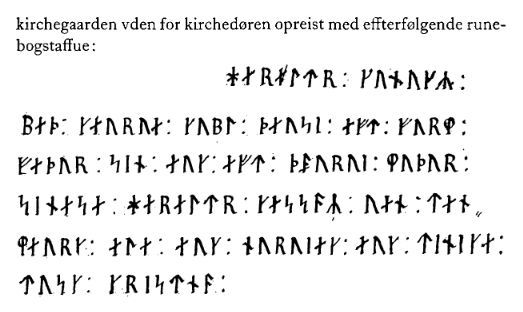
Quelle: Præsteindberetninger til Ole Worm, Bind 1, Indberetninger fra Ålborg og Ribe Stifter 1625-42, Frank Jørgensen, S. 190/191 (Online verfügbar hier).
Jon Skonvig (*1600 - 1664, Pfarrer) wurde von Ole Worm ins Land hinausgeschickt um Altertümer zu erfassen. Er war 1629 in Jelling und hat dabei nur diese (miserablen) Zeichnungen der beiden Runensteine angefertigt.

Die Aufzeichnungen von Jon Skonvig - sechs Handschriften - haben sich in der sogenannten "Arnamagnæanske samling, AM 366-371 fol." (zu deutsch: Arnamagnäanische Sammlung) erhalten.
Über diesen Link kann diese Doppelseite 17r / 17v der A.M. 367 fol über die Webseite "www.handrit.is" eingesehen werden. Details und die Wiedergabe seiner Notizen findet sich bei meinen Ausarbeitungen zum jeweiligen Runenstein.

Am Mittwoch, 28.09.2022, war ich in der Universität Kopenhagen in der Arnamagnæanske Samling und durfte das Original - AM 367 fol. - in Händen halten und eingehend fotografieren. Man bat mich aber von einer Veröffentlichung meiner Fotos abzusehen und stattdessen auf die digitalisierte Handschrift über www.handrit.is zu verweisen.
Unter GKS 2370 kvart finden sich in der Königlichen Bibliothek in Kopenhagen von Ole Worm (*13.05.1588 - 31.08.1654, Arzt, Universalgelehrter und der Begründer der Runologie) erhaltene Teile seines Originalentwurfs seiner Danicorum Monumentorum Libri Sex, Hafniae, 1643 aus dem Jahr 1623. Daraus entstand sein bahnbrechendes Werk "Danicorum Monumentorum Libri Sex, Hafniae, 1643". Die Passage zu Jelling habe ich hier aufbereitet:
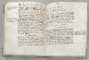 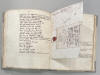 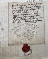


Dieses Werk habe ich bei meinem Kopenhagen Studien Tripp 2022 am 26.09.2022 in der Königlichen Bibliothek - Den sorte Diamant - in Kopenhagen auszugsweise fotografiert.
Durch Emil Leopold Gigas (*23.08.1849 - 08.09.1931, Bibliothekar, Literaturhistoriker) wurde das Werk "E. Gigas: Katalog over Det store kongelige Bibliotheks Haandskrifter. Første Bind (1903)" herausgegeben. Darin findet sich auf der S. 14 dieser Eintrag dazu:

Gigas verweist darin auch auf Jon Erichsen (*31.08.1728 - 29.03.1787, isländischer Bibliothekar und Verfasser)
 Bildquelle:
Wikipedia - Lizenz:
Public Domain
Bildquelle:
Wikipedia - Lizenz:
Public Domain
der diese Handschrift in seiner früheren Auflistung "Udsigt over den gamle Manuscript-Samling i det store Kongelige Bibliothek" von 1786 auf der S. 93 unter der Nummer 2 aufgelistet hatte. Er war seit 1781 als Bibliothekar bei der Königlichen Bibliothek in Kopenhagen angestellt und hat die damals noch völlig ungeordnete Sammlung erstmals grundlegend katalogisiert - Titelblatt. Eine deutschsprachige Rezension zu diesem Werk findet sich in der Allgemeine Literatur- Zeitung - März 1788. Außerdem führt Gigas den Namen Hans Gram (*28.10.1685 - 19.02.1748, Philologe und Historiker)
 Bildquelle:
Digitale Sammlung der Königlichen Bibliothek Kopenhagen -
Lizenz:
Public Domain
Bildquelle:
Digitale Sammlung der Königlichen Bibliothek Kopenhagen -
Lizenz:
Public Domain
an. Er war von 1730-48 Leiter der Königlichen Bibliothek. Er gilt als der erste moderne Historiker Dänemarks. Diese Handschrift befand sich vormals mit der Nummer 118 in seiner Sammlung (Umfasste ca. 24.000 Bücher und ca. 300 Handschriften) und wurde 1750 in den Bestand der Königlichen Bibliothek in Kopenhagen aufgenommen. Seine Bücher wurden nach seinem Tod nämlich auf zwei Auktionen versteigert und gingen größtenteils ins Ausland. Die Handschriften hingegen erwarb die Königlichen Bibliothek in Kopenhagen damals komplett. Ein Bildnis von Hans Gram findet sich z.B. hier.
Im Jahr 1634 hat
Johann Adolph Cypraeus (*1592 -
Oktober 1636, katholischer Pastor) das Werk "Annales
Episcoporum Slesvicensium" veröffentlicht. Unter Berufung auf das
Werk von
Henrik
Rantzau (
Noch vor seinem u.a. Standardwerk hat Ole Worm (*13.05.1588 - 31.08.1654, Arzt, Universalgelehrter und der Begründer der Runologie) im Jahr 1636 in dem Buch "Runer seu Danica literatura antiquissima, vulgò Gothica dicta luci reddita" auf der S. 55 kurz zu "... Regis Gormonis & Haraldi monumentum quod Jellinga..." berichtet.
Ole Worm (*13.05.1588 - 31.08.1654, Arzt, Universalgelehrter und der Begründer der Runologie)
Bildquelle:
Digitale Sammlung der Königlichen Bibliothek Kopenhagen -
Lizenz:
Public Domain
nutzte die zeichnerische Vorlage von Skonvig für zwei Metallschnitte auf der S. 331 und auf der S. 332 in seinem berühmten Werk "Danicorum Monumentorum Libri Sex, Hafniae, 1643" - Lizenz: Public Domain - die allerdings deutlich von seiner Arbeit in der A.M. 367 fol - siehe oben - abweichen. Die Stiche in Worms Werk wurden vermutlich von Hans Andreas Greys (*? - 1656, Grafiker und Kupferstecher) ausgeführt, der seinerzeit ein Meister seines Fachs war.


Digitalisierte Ausgabe im Internet über die Bayerische Staatsbibliothek / MDZ Münchener DigitalisierungsZentrum Digitale Bibliothek - urn:nbn:de:bvb:12-bsb10800415-0 - abgerufen 14.07.2023. Das Titelblatt habe ich hier einmal zur Ansicht.
Die u.a. Gesamtdarstellung auf der S. 328 habe ich am Montag, 26.09.2022, in der Königlichen Bibliothek - Den sorte Diamant - in Kopenhagen selbst fotografiert.

Lis Jacobsen (*29.01.1882 - 18.06.1961, dänische Runologin und Archäologin)
 Bildquelle:
Wikipedia - Lizenz:
Public Domain
Bildquelle:
Wikipedia - Lizenz:
Public Domain
hat sich dankenswerterweise zur Aufgabe gemacht Ole Worms lateinische erste und vollständige Beschreibung über Jelling durch cand. mag. G. Hermansen ins Dänische übersetzen zu lassen. Sie hat dies in dem Artikel "Ole Worms beskrivelse og tolkning af Jelling-monumentet" in dem Vejle Amts Aarbog, Ausgabe 1937, auf den S. 1-28, mit Anmerkungen veröffentlicht. Darüber ist es für mich (Nichtlateiner) doch einfacher / schneller zu verstehen, zumal man den dortigen Text auch kopieren und z.B. mit Google Übersetzer ins Deutsche übertragen kann.
Stephan Hansen Stephanius (* 23.07.1599 - 22.04.1650, dänischer Philologe und Historiker) hat in seinem 1645 erschienenen Werk "Notae uberiores in Historiam Danicam Saxonis Grammatici" auf den S. 202-204 unter Rückgriff auf das Material / die Druckplatten von Ole Worm (wie später auch Peder Hansen Resen s.u.) zu Jelling und seinen Monumenten berichtet.

Screeshot - 23.06.2023 - Bayerische Staatsbibliothek / MDZ Münchener DigitalisierungsZentrum Digitale Bibliothek - urn:nbn:de:bvb:12-bsb11197250-3
Die nächste Erwähnung des Runensteins findet sich bei Johannes Meier (1660, Lehrer und Verfasser) in seinem Werk Liber monumentorum Danicorum, qvi monumenta Danica Olai Wormii partim emendat partim locupletat (pdf-Datei anhand eigener Fotos von mir erstellt) von 1654 (Seite 37 rechts) - Königlichen Bibliothek in Kopenhagen - GKS 2371 kvart. Er hat nur die Textseite wiedergegeben.


In der Königlichen Bibliothek in Kopenhagen hat sich von Johannes Meier aber auch noch eine zweite Handschrift erhalten - NKS 799 kvart - Joh. Mejeri Monumenta Runica in Dania (pdf-Datei anhand eigener Fotos von mir erstellt). Deren Entstehungsdatum ist nicht bekannt. Der Runenstein findet sich auf Seite 36 rechts. Er hat nur die Textseite wiedergegeben.


NKS 799 kvart - Joh. Mejeri Monumenta Runica in Dania (pdf-Datei anhand eigener Fotos von mir erstellt) - Papier - 44 Blatt, Blatt 41-44 unbeschrieben, aus dem 18. Jahrhundert, vormals Nr. 70 in der Manuskript Sammlung von Peder Frederik Suhm (*18.10.1728 - 07.09.1798)
 Bildquelle:
Wikipedia - Lizenz:
Public Domain
Bildquelle:
Wikipedia - Lizenz:
Public Domain
Es handelt sich um
ein Büchlein mit einfachem Pappeinband, der Buchrücken ist aus
Leder und
verstärkte Ecken aus Leder weist der Buchdeckel auf. Es hat die
Maße: H: ca. 20
cm / B: ca. 17 cm / D: ca. 1,5 cm. Zu den einzelnen Zeichnungen im Büchlein
wurde ein einfacher Maßstab abgebildet.
Bei beiden Exemplaren
weist immer das rechte Blatt der Doppelseite in der oberen Ecke eine mit
Bleistift geschriebene Seitenzahl auf. Diese beiden Werke sind Abschriften von
früheren Werken, die die Zeit nicht überdauert haben.
Vielleicht sind sie in
Kopenhagen beim
Großbrand von 1728
vernichtet worden, als neben zahlreichen privaten Beständen auch ca.
35.000 Bücher der Königlichen Bibliothek
in
Kopenhagen ein Raub der Flammen wurden!
Die
GKS 2371 kvart soll laut
Ludv. F. A. Wimmer
(*07.02.1839 - 29.04.1920, Philologe und Runenforscher)
 Bildquelle:
Fotografie zw. 1877-1900 von Fotograf Hansen & Weller
-
Det Kgl. Biblioteks billedsamling - Lizenz:
Public Domain
Bildquelle:
Fotografie zw. 1877-1900 von Fotograf Hansen & Weller
-
Det Kgl. Biblioteks billedsamling - Lizenz:
Public Domain
und seinen Infos von Christian Bruun (*10.12.1831 - 28.02.1906, Königlicher Oberbibliothekar)
 Bildquelle: Fotografie
um 1880 von Fotograf J. Petersen
(*19.03.1829 -
01.02.1905) -
Det Kgl. Biblioteks billedsamling - Lizenz:
Public Domain
Bildquelle: Fotografie
um 1880 von Fotograf J. Petersen
(*19.03.1829 -
01.02.1905) -
Det Kgl. Biblioteks billedsamling - Lizenz:
Public Domain
von
Niels Foss selbst abgeschrieben worden sein. Er hat die Texte laut
den Studien von
Erik Moltke
(*04.04.1901 - 19.10.1984, Runologe, Historiker)
offenbar überarbeitet, verkürzt oder geändert und seine eigene
Orthografie eingebracht (z.B. alt: haffuer - bei Foss: haver / tyck/tyk /
kircke/kirke / oc/og u.a.).
In der
NKS 799 kvart hingegen steht auf der Seite 37 links unten "Niels
Knudsen Jerne" und seine Handschrift lässt vermuten, dass er die
gesamte Abschrift angefertigt hat. Er war offenbar ein professioneller Schreiber
und könnte mit dem Niels Knudsen identisch sein, der
1728 "Skriverkarl" auf dem Holmen (Stadtviertel von
Kopenhagen) war, also ein Mann der schnell viele Texte schreiben und liefern
konnte. Er wurde am 08.11.1737 zum "ekvipageskriver"
ernannt. Es scheint dass er sich entgegen
Niels Foss sehr eng an das Original gehalten hat.
Offenbar gab es laut dem Katalog über die Büchersammlung
von
Peter
Hansen Resens (*17.06.1625 -
01.06.1688)
 Bildquelle:
Wikipedia - Lizenz:
Public Domain
Bildquelle:
Wikipedia - Lizenz:
Public Domain
"Bibliotheca
Regiæ Academiæ Hafniensi donata" Hafniæ (Kopenhagen) von
1685 - siehe
S. 273 - früher noch ein drittes Werk von
Johannes Meier mit dem Titel "Johan. Meieri
liber MS. de Monumentis Runicis sive antiqvis Danicics".
Quelle:
Erik
Moltke -
Jon Skonvig og de andre runetegnere. Et bidrag til runologiens historie i
Danmark og Norge I-II,
1956-58
Band 2
-
Kapitel 13
Zwischen Montag, 26.09.2022, und Mittwoch, 28.09.2022, habe ich in der Königliche Bibliothek - Den sorte Diamant - in Kopenhagen - u.a. diese beiden alten Handschriften nach Online-Vorbestellung zur Ansicht erhalten. Ich durfte mir Aufzeichnungen machen, sie aber auch uneingeschränkt fotografieren. Ich habe sie mit dem Smartphone komplett als Doppelseiten fotografiert und daraus jeweils eine pdf-Datei erstellt. Vielleicht hat ja jemand Bedarf an diesen seltenen Ausgaben, die aufgrund ihres Alters keinem Urheberrrecht mehr unterliegen.
Peder Hansen Resen (*17.06.1625 - 01.06.1688, Jurist und Historiker) hat mit dem von ihm über 20 Jahre gesammelten Material das großartige Werk "Atlas Danicus", bestehend aus letztlich 39 Folianten, geschaffen. Nur geringe Teile wurden aber zu seiner Lebzeit gedruckt. Die Bände wurden wenige Jahre nach seinem Tod 1692 an die Königliche Bibliothek Kopenhagen übergeben. Aufbewahrt wurden sie auf dem Dachboden der Trinitatis Kirche. Dort wurden sie fleißig studiert, abgeschrieben und zeitweise ausgeliehen. Leider wurde dann ein Großteil davon beim Kopenhagener Großbrand 1728 zerstört. Es hat sich neben einigen Originalseiten - siehe Arnamagnäanische Sammlung - AM 359 fol. / AM 360 fol. / AM 361 fol. und AM 362 fol. (digitalisiert) - nur eine (verkürzte) Abschrift und außerdem Kupferstiche von etwa 200 Städteansichten aus der Vogelperspektive erhalten. Originale dieser AM 359/360/361 fol sind über die Universität Kopenhagen - Institut for Nordiske Studier og Sprogvidenskab (NorS) - AM 359 fol / AM 360 fol / AM 360 fol (Karten) / AM 361 fol - in sw abrufbar. Eine zweite (verkürzte) Ausgabe war von Vincent Lerche (*04.04.1666 - 28.07.1742, Jurist, Architekt) beauftragt worden, diese wurde aber beim Brand von Schloss Christiansborg im Jahr 1794 vernichtet.
In der Königlichen Bibliothek in Kopenhagen wird seit 1803 in der Sammlung Uldall (186 folio) diese einzige verbliebene Ausgabe, die in den 1750er Jahren durch den Hofbaumeister Laurids de Thurah (*04.03.1706 - 06.09.1759)
 Bildquelle:
Wikimedia - Lizenz:
Public Domain
Bildquelle:
Wikimedia - Lizenz:
Public Domain
aus verstreuten Resten des Atlas Danicus in 7 Bänden rekonstruiert worden war, aufbewahrt:
Wie diesem Titel zu entnehmen ist, gehörte dieses Exemplar vormals Adam Gottlob Graf von Moltke (*10.11.1710 - 25.09.1792, Staatsmann, Diplomat)
 Bildquelle:
Wikimedia - Lizenz:
Public Domain
Bildquelle:
Wikimedia - Lizenz:
Public Domain
Nach dessen Tod erwarb Herman Treschow (*11.12.1739 - 02.05.1797, Professor für Theologie, Pfarrer) diese Ausgabe. Peter Uldall (*29.06.1743 - 11.11.1798, Jurist, Theologe)
 Bildquelle:
Wikimedia - Lizenz:
Public Domain
Bildquelle:
Wikimedia - Lizenz:
Public Domain
wiederum kaufte sie für 170 Rigsdaler (Rigsdaler zu 24 Skilling - damals 1 ½ Mark) nach dessen Ableben. Er hatte aber nicht lange Freude daran, denn er starb ein Jahr später an einem Schlaganfall. Sein Sohn, Justizrat W. A. Uldall, schenkte diese Ausgabe der Kgl. Bibliothek im Jahr 1803, wo dieses großartige Werk noch heute verwahrt wird - Ein Band hat übrigens die stolze Größe H/B/D von 40 cm x 29,5 cm x 9,5 cm.
Im Atlas VI. ist auf den Seiten 744-48 ein Eintrag zu den Jelling Monumenten / Runensteinen enthalten, die ich am 28.09.2022 vor Ort fotografieren durfte.


Die Gesamtdarstellung auf der S. 744 und die zeichnerische Wiedergabe der beiden Runensteine wurde unter Verwendung der Druckplatten zu Ole Worms Werk "Danicorum Monumentorum Libri Sex, Hafniae, 1643" erstellt.
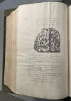 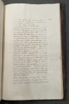 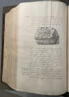

Resens Bericht über Jelling beginnt mit dem 3. Absatz der S. 744 und zu der Zeichnung
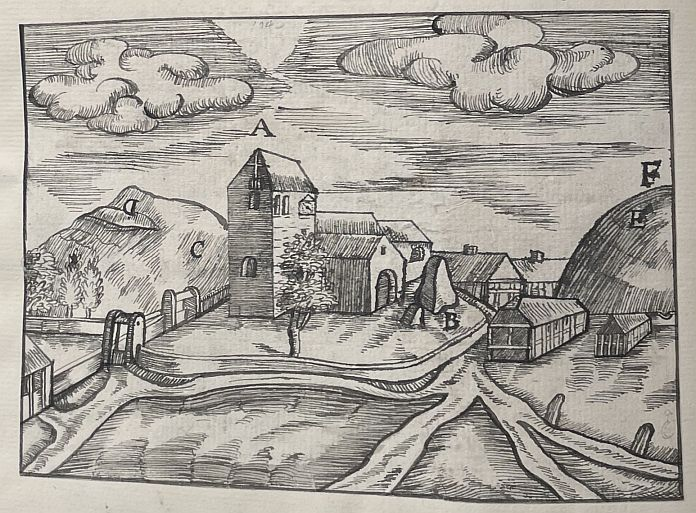
fügt er darunter eine Erklärung an (übersetzt): "A ist die Kirche. C ist der Hügel nördlich der Kirche, der 64 Ellen hoch ist (1 alen/Elle = 62,77 cm), 360 Ellen breit - weiter auf der S. 745 - am Fuß und 112 an der Spitze. D ist die Quelle auf diesem Hügel, die aus Stein gebaut und im Umfang 47 Ellen misst. E ist der Hügel, der südlich der Kirche liegt,; der ist 37 Ellen hoch und misst im Umfang 431 Ellen..." Zum Runenstein 2 heißt es dann noch auf der S. 745 (übersetzt):
"Zwischen der Kirche und dem südlichen Hügel, nahe der Kirchenmauer, steht ein großer dreiseitiger Stein B, der in der Höhe fünfeinhalb Ellen und im Umfang neun Ellen misst. Auf diesem Stein ist auf allen Seiten etwas mit Runen geschrieben; Auf der breitesten Seite, die viereinhalb Ellen misst, befindet sich eine Inschrift wie auf diesem Bild:
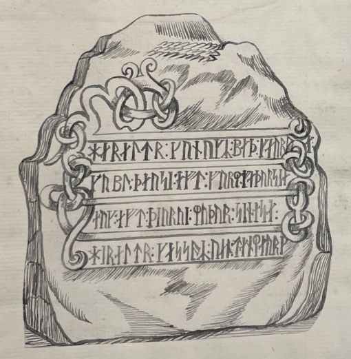
Die Inschrift entspricht den folgenden gewöhnlichen Buchstaben (S. 746 übersetzt):
Harald König ließ errichten
Denkmal dieses nach Gorm Vater
und nach Thyra Mutter seine
Harald Kaiser von Dänemark
Auf der anderen Seite, die zu den schmaleren gehört und nur zweieinhalb Ellen misst, befindet sich das Bild eines Löwen, oder besser gesagt eines Greifs, und diese Worte: alle und Norwegen.
Auf der dritten (Seite), die zweieinhalb Ellen misst, gibt es ein Bild eines Mannes und diese Worte: und machte das Volk zu Christen. Beide Schmalseiten stellt Worm wie folgt dar:
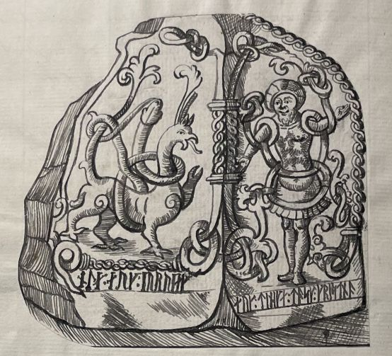
Allerdings muss man die Wörter auf allen drei Seiten verbinden, damit die vollständige Bedeutung zum Vorschein kommt, und zwar wie folgt:
Harald König ließ errichten
Denkmal dieses nach Gorm Vater (S. 747)
und nach Thyra Mutter seine
Harald Kaiser von Dänemark
alle und Norwegen
und machte das Volk zu Christen.
Worm meint, dass dies folgendes bedeutet: König Harald befahl diese Grabhügel zu errichten zum Gedenken an seinen Vater Gorm und seine Mutter Thyra, Harald gewann Dänemark und ganz Norwegen und machte deren Volk zu Christen. Aber zu den letzten drei Zeilen gibt es andere, die eine etwas andere Bedeutung zum Ausdruck bringen, indem sie die Worte von Dänemark als Umschreibung eines Genitivs wahrnehmen und sie dann folgendermaßen übersetzen: Harald, der Herrscher von Dänemark und ganz Norwegen und seinem christlichen Volk; Sie glauben, dass diese Interpretation eher den historischen Umständen entspricht. Dieser Harald ist der Blauzahn, den der römische Kaiser Otto zur Annahme des Christentums zwang und der später, als sich sein eigener Sohn Sven Gabelbart gegen ihn erhob, aus dem Königreich vertrieben und im Exil von einem Krieger getötet wurde. Auch Saxo erzählt in seinem zehnten Buch von seinem Eifer, ein Denkmal für seine Eltern zu errichten, und hier scheint es auch, dass die Kirche, die wir gerade besprochen haben, bereits zu seiner Zeit gebaut wurde."
In den Aarbøger for nordisk oldkyndighed og historie, Ausgabe 1895, findet sich ab der S. 252 ein interessanter Aufsatz von O. Nielsen mit dem Titel "Bidrag til Jellings og dets mindesmarkers historie". Darin beschäftigt er sich auf der S. 267 u.a. mit einem schriftlichen Befehl von König Frederik III. von Dänemark und Norwegen (* 18. März 1609 - 09. Februar 1670)
 Bildquelle:
Königl. Sammlung - Schloss Rosenborg - Lizenz:
Public Domain
Bildquelle:
Königl. Sammlung - Schloss Rosenborg - Lizenz:
Public Domain
vom 28.09.1648. Der verweist darin auf seinen vorausgegangenen Besuch in Jelling. Da sich die erste Tafel (von Caspar Markdanner - siehe oben) vor Ort als fehlerhaft erwiesen hatte, wurde der örtliche Pastor vom König angewiesen eine korrekte Tafel aufstellen zu lassen. Der Witwe des damaligen Lehnsmannes von Koldinghus, Frau Margrete Lunge - Anmerkung: Margrete Bille, geb. Jørgensdatter Lunge, *01.05.1616 - 07.10.1653, Witwe von Mogens Henriksen Bille (*13.06.1617 - 25.04.1648 - Enkelin von Caspar Markdanner, schrieb er in diesem Brief, dass sie für die Bezahlung der Tafel und des Pfaffers sorgen solle, was ihr dann erstattet würde. Da sie dem Befehl offenbar nicht wie erhofft nachkam hat der König in einem neuerlichen Brief vom 13.09.1649 an den nun neuen Lehnsmann, Ebbe Gyldenstjerne (*1625 - Mai 1677, Lehnsmann auf Koldingshus 1649-51), einen weiteren Brief in der Sache aufgesetzt und um Erledigung bei versprochener Bezahlung gebeten. O. Nielsen schreibt dann weiter (übersetzt): "Auch dieser Befehl scheint nicht befolgt worden zu sein; in den Konten für das Lehen Koldinghus scheint es keine Kostennote für eine neue Tafel zu geben, daher ist es wahrscheinlich, dass es die Tafel von Caspar Markdanner war, die (01. Juli) 1679 zusammen mit der Kirche verbrannte." Weiter heißt es dann, dass dem Pfarrer Jørgen Pedersen die Jelling Monumente wirklich am Herzen lagen. Deshalb schrieb er am 23.03.1635 an den König - Christian IV. (*12.04.1577 - 28.02.1648) - einen Brief und bat um eine schützende Zauneinfriedung der Hügel; Holz gebe es doch genug im Wald trug er vor. Da es dann offenbar nur ein Reisigzaun wurde, beschwerte sich der Pfarrer später beim König, der dem Lehnsmann Ernst Normand (*26.09.1579 - 02.10.1645, dänischer Höfling und Gutsbesitzer) fast ein Jahr später am 10.03.1636 schriftlich auftrug einen steinernen Zaun um die Grabhügel zu errichten. Über diesen Link findet man doch heutzutage tatsächlich diesen königlichen Befehl im Original im Online Bestand - Jydske Tegnelser IX, S. 282 - des Dänischen Rigsarkivet. In Druckbuchstaben kann man sich diesen Brief in einem Beitrag von O. Nielsen mit dem Titel "To Documenter til Oplysning om Jellingehøienes Fredning" unter Punkt 1 auch hier anschauen: Danske Samlinger for Historie, Topographi, Personal - Band 1 - 1865-66 - S. 101.

Screenshot vom 25.06.2023 - Frei von Urheberrechten
Der königliche Befehl zur
Errichtung einer Steinmauer um die beiden Hügel - siehe oben -
damit die Menschen nicht wahllos darauf herumklettern, wurde offenbar umgesetzt.
In dem Buch mit dem Titel "Kongehøiene
i Jellinge og deres Undersøgelse efter Kong Frederik VII's Befaling i 1861"
steht nämlich auf der
S. 5: "
Ein weiterer Bericht zu Jelling stammt von Troels Arnkiel (Getauft 28.04.1638 - 07.09.1712, lutherischer Pastor und Altertumsforscher). In seinem im Jahr 1702 erschienen Werk "M. Trogilli Arnkiels, Probsten und Pastoren zu Apenrade Jn dem Hertzogthumb Schleßwig-Hollstein/ Außführliche Eröffnung Cimbrische Heyden-Begräbnisse : Wie unsere Vorfahren Cimbrischer Nation/ Die Sachsen/ Guten/ Wenden und Fresen/ und die von denselben herstammende Mitternächtige Völcker I. Jhre Begräbniß-Gebräuche/ II. Jhre Todten-Gräber/ III. Jhre Grab-Krüge/ IV. Ihre Grab-Schrifften An- und eingerichtet/ ... / Erklähret und mit vielen Kupfferstücken beleuchtiget von M. Trogillo Arnkiel/ Probsten und Pastoren zu Apenrade" macht er im Theil 3, S. 275, unter § 5 Anmerkungen zu Jelling, zum großen Runenstein - siehe unten - verschweigt aber den kleinen Runenstein.

Eine Seite zuvor bringt er (mit dem Hinweis zu "Pag: 275") diese zeichnerische Darstellung der Jelling Monumente die natürlich als Vorlage den Rantzau Prospekt der Jelling Monumente von 1591 hat. Allerdings wurde dieser Prospekt zuvor überarbeitet und zeigt nun beide Runensteine unter "B", und auf dem rechten Hügel unter "F" den "Grab-Stein des Königs..." der von dort zur Kirche verbracht wurde.

Quelle: Universitäts- und Landesbibliothek Sachsen-Anhalt - https://nbn-resolving.org/urn:nbn:de:gbv:3:1-750088 - Lizenz: Public Domain 1.0 - Screenshots vom 24.06.2023
Mag. Mouritz Mouritzen Höyer (*11.03.1678 - 30.03.1750) war ab 1702 Pfarrer in Jelling und musste auf königlichen Befehl zum Besuch der Königin Anna Sophie von Reventlow (*16.04.1693 - 07.01.1743 - Frau des dänischen/norwegischen Königs Friedrich IV. )
 Bildquelle:
Wikipedia - Lizenz:
Public Domain
Bildquelle:
Wikipedia - Lizenz:
Public Domain
am Dienstag, 05. August 1721, einen mündlichen Vortrag über Jelling, die Runensteine und seine weiteren Monumente vor ihr und Prinzessin Charlotte Amalie (*06. Oktober 1706 - 28. Oktober 1782)
 Bildquelle:
Wikipedia - Lizenz:
Public Domain
Bildquelle:
Wikipedia - Lizenz:
Public Domain
halten. In der Königlichen Bibliothek befinden sich davon mehrere Abschriften (Thott 1471 kvart / Uldall 465 kvart / Additamenta 193 kvart / GKS 740 fol. / NKS 800 kvart / dazu noch Landsarkivet for Fyn, Odense, Karen Brahes Bibliotek, C III,2 (siehe S. 81 = S. 85 in der pdf-Datei - die Karen Brahe Bibliothek ist jedoch 2010 in das Roskilde Kloster verlegt worden und kann nur in Absprache, dann über die benachbarte Roskilde Bibliothek, für Forschungszwecke genutzt werden), die sich über die Jahrhunderte erhalten haben und auf verschiedenen Wegen Eingang in die Königliche Bibliothek fanden.
Umfassende Informationen zu dieser alten Handschrift Handschrift mit dem Titel "Encomium Jellingense" unter Jelling Geschichte. Über den u.a. Einband von Thott 751 folio kann man eine pdf-Datei zur kompletten Ausgabe aufrufen, die ich aus einzelnen Fotos erstellt habe, die ich bei meinem Besuch am Dienstag, 27.09.2022, in der Königlichen Bibliothek in Kopenhagen gemacht habe.

Im Vejle Amts Aarbog, 1943, gibt es auf den S. 145-166 den Artikel mit dem Titel "Mourits Mouritsen Højer (Jellings Pris)" von Anders Bæksted (16.08.1906 - 18.06.1868, Museumsinspektor und Runologe) zu diesem Werk. Der Autor gibt darin den Inhalt der Handschrift Thott 751 folio in Druckschrift wieder.
Von Peter Penz gibt es auf der Webseite des Jelling Projekt noch diese informative Abhandlung zur Thematik.
Erik Pontoppidan (der Jüngere, *03.09.1698 - 20.12.1764, dänischer Theologe, Prediger, Historiker und Autor)
 Bildquelle:
Wikipedia - Lizenz:
Public Domain
Bildquelle:
Wikipedia - Lizenz:
Public Domain
schreibt in seinem Werk von 1763 "Den Danske Atlas" - Band I - Cap. 1, S. 3 (S. 3 - Fußnote zu * in der pdf-Datei) "...Paa Kong Gorms navnkundige Grav-Steen Jelling, staaer med Rune Bogstaver, Tanmaurk og andensteds Tanmarku". In diesem Band, nun in Kapitel VI, kommt er auf der S. 95 (S. 14 in der pdf-Datei) ganz kurz auf die Hochzeit von Gorm und Thyra zu sprechen und auf der nachfolgenden S. 96 (S.15 in der pdf-Datei) berichtet er noch zu dem großen Runenstein von Harald Blauzahn (mit Tafel IX). Hier deren bildliche Wiedergabe, die auf einem Holzschnitt von Jon Skonvig beruht.

In seinem Band V, 2. Bind, Cap. 10, macht er auf der 987-89 (S. 30 (c) in der pdf-Datei) und auf der S. 998 Ausführungen zu Jelling. Dort schreibt er u.a.: "Der zweite Stein mit Runenschrift, der von der Beerdigung von König GORMS und Königin TYRE DANEBODS in diesen Hügeln zeugen, steht aufrecht auf dem Kirchhof vor dem Eingang der Kirche, aber ob er ursprünglich dort stand ist unbekannt. Den kleineren, recht schlichten Stein hat König GORM zweifellos zu seinen Lebzeiten geschnitzt und war für seine Königin als Denkmal gedacht..." und weiter: "Zur Zeit von König FRIDERICH II. war der große Stein im Boden versunken, aber der berühmte Lehnsmann von Koldinghuus, Caspar Markdaner, ließ ihn 1586 ausgraben und aufstellen, worauf er eine Tafel mit einer vergoldeten Inschrift anbringen ließ im Chor der Kirche, die bis zum Brand der Kirche im Jahr 1679 sichtbar war."
Durch Søren Abildgaard (*18.02.1718 - 02.07.1791, Zeichner, Kupferstecher und Geologe)
 Bildquelle:
Jellingprojektet - Lizenz:
Public Domain -
http://www5.kb.dk/images/billed/2010/okt/billeder/object444188/da/
Bildquelle:
Jellingprojektet - Lizenz:
Public Domain -
http://www5.kb.dk/images/billed/2010/okt/billeder/object444188/da/
wurden mehrere Aufzeichnungen zu Jelling vorgenommen. Eine zweiseitige Notiz von ihm aus dem Jahr 1776 - Originalgröße 14 x 20 cm - bezieht sich auf eine ältere Lesung der Inschrift von B. Grauer, Notar aus Tondern, 1737 (Nr. 599) - siehe unten.

#/media/Datei:Fotoreproductie_van_een_schilderij,_voorstellende_een_portret_van_Christian_Friis_til_Kragerup_Christian_Friis_(til_Kragerup)_(titel_op_object),_RP-F-2001-7-742-16.jpg){kind=link}


Quelle: Digitale Sammlung des Nationalmuseums in Kopenhagen - Bild 1 - Bild 2 jeweils Lizenz: CC-BY-SA
Er bezieht sich hier auf das 1734 erschienene Werk von B. Grauer, Notar aus Tondern, mit dem Titel "Gründliche und ausführliche Erklärung Derer Heydnischen und in specie Runischen Götzen-Bilder, Thieren, Figuren und Gotho-Runischen Characteren, Welche auf dem im Jahr 1734. den 21 April bey Gallehus gefundenen gülden sogenannten Heiligthums- oder Götzen-Dienstes-Horn sich repräsentiren". Auf dessen S. 91-93 finden sich seine Informationen zum Runenstein von Harald Blauzahn.
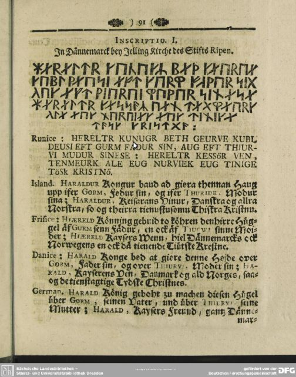
Quelle: SLUB Dresden - urn:nbn:de:bsz:14-db-id35609734X0 - Lizenz: Public Domain Mark 1.0 - S. 91 abgerufen 14.07.2023.
Poul Grinder-Hansen (*30.12.1956, dänischer Historiker, Museumskurator undVerfasser) merkt in seinem Buch "Søren Abildgaard (1718-1791) Fortiden på tegnebrættet" - 2010 - zur Nr. 599 auf der S. 533 an, dass man an dieser Notiz, das eigenhändige Abzeichnen der Runenzeichen durch Søren Abildgaard erkennen könne, wie gründlich er sich auf seine Arbeit mit den Jelling Monumenten vorbereitet habe. Die zu Werken von Abildgaard in Klammer gesetzten Nummern beziehen sich jeweils auf diesen Katalog.
Zu dem großen Runenstein hat Abildgaard mehrere Aufzeichnungen vorgenommen. Darunter auch dieses eng beschriebene Blatt - Originalgröße 21 x 33 cm - mit der Überschrift "Runeskriften paa den store og brede plan af den store Runesteen paa Jellinge Kirkegaard".
Es ist mit zahlreichen Texten zu den beiden Inschriften und den jeweiligen Runenzeichen beschriftet. Aufgrund der ordentlichen Größe hier zunächst nur als Miniaturansicht, die aber durch Mausklick vergrößert angezeigt wird.

Quelle: Digitale Sammlung des Nationalmuseums in Kopenhagen - Lizenz: CC-BY-SA
Hier nur mal die Übersetzung für seinen Text im linken oberen Bereich - zu dem erwähnten Pfarrer "Provst Bucholt i Balle", auf dessen Lesung Abildgaard sich bezieht, habe ich bislang keine Informationen erlangen können:
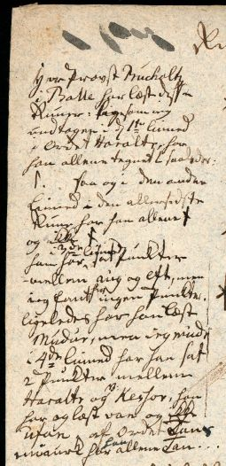
"Hier hat Pfarrer Buchholt in Balle diese Runen genauso gelesen wie ich,
außer dass er in der ersten Zeile des Wortes Haraltr das L so
gezeichnet hat (). Dann hat er in der zweiten Linie in der allerletzten Rune ()
und nicht (). In der 3. Zeile hat er Punkte zwischen aug und eft gesetzt, aber
ich habe hier keine Punkte gefunden. Ebenso hat er Mudur
gelesen, ich aber Mudr, in der 4. Linie hat er 2 Punkte
zwischen Haraltr und Kessor gesetzt, er hat
auch van und nicht ufan gelesen, vom Wort
Tanmuaurk hat er nur Tan...
Anmerkung: Die () stehen für seine
Runenzeichen im Original - siehe links.
Eine Wiedergabe des großen Runensteins mit seiner Inschrift und kurzen ergänzenden Kommentaren zu einzelnen Runenzeichen hat Søren Abildgaard hier mit diesem Skizzenblatt erschaffen - Originalgröße 26 x 21 cm (Nr. 603) - das wohl als Vorlage für seine Reinzeichnung diente, die dann als nächstes folgt. Auf der Rückseite des Blattes findet sich eine gleichartige Wiedergabe des kleinen Runensteins (siehe unter Jelling 1).

Quelle: Digitale Sammlung des Nationalmuseums in Kopenhagen - Lizenz: CC-BY-SA
Seine Reinzeichnung und auf deren Rückseite der ergänzende Text mit dem
Steinquerschnitt zum großen Runenstein habe ich hier
aufbereitet - Originalgröße 26 x 42 cm (Nr. 605).


Quelle:
Digitale
Sammlung des Nationalmuseums in Kopenhagen -
und hier
- Lizenz jeweils:
CC-BY-SA
Der Text auf der rechten Seite lautet: "Tegningerne
A og B viise de Figurer og Runer, som sees paa
den største Runesteen, hvilken staaer paa Jellinge Kirkegaard, samme har trende
Planer eller flade Sider som støde sammen og giver Steenen, som er af haard
Kamp, en spidsagtig Figur oven til, hvis Grunde Flade er Triangelagtig, saaledes
som den her neden tegnede Figur C udviiser. Tegningen A
viiser den bredeste Side af Stenen med fire Rune Linneder, i den fierde Linned i
det andet Ord støde de tvende første Runer sammen for oven, og synes at kunne
give Anledning til at tvivle, om det skal være [ ] eller [ ], men da det ved
nøje Betragtning erfares at Skraa Strægen paa den første Rune i dette Ord naar
op til det øverste, og der støder ganske nær ind paa næste Rune, og at samme
Skraa Stræg ikke gaar tvers over Runens perpendicular Stræg og hen paa den anden
Side, hvor der er en Grub eller Ujevnhed i Steenen, saa bliver det denne Rune [
] og ikke [ ]. Den fierde Rune i dette samme Ord har kiendelig denne Figur [ ],
som synes at betyde [ ]. Ligeledes i det tredje og næste Ord synes tydelig to
Runer at være samlet i én, saaledes [ ] i steden for [ ]. I det fierde Ord i
samme Linned synes disse Runer [ ] at være forkortede saaledes [ ].- Tegningen
B viiser de øvrige tvende Sider ad Stenen med de der udi
udhugne Figurer og Runer. Paa den Side, hvor det Menneske Billede staar, er i
Rune Linneden neden under afstødte nogle Runer i et Rum af 14 ¾ Tomes Længde. En
Tome-Maal i min Aftegning betyder en Fod eller en halv Alen i monumentet,
hvilken proportion ieg sædvanlig bruger til monumenters Aftegning. A(nn)o 1771.
S: Abildgaard
Übersetzt: "Die Zeichnungen
A und B zeigen die Figuren
und Runen, die auf dem größeren Runenstein zu sehen sind, der
auf dem Jelling Kirchhof steht. Dieser hat zulaufende Flächen oder flache
Seiten, die zusammenkommen und dem Stein, der aus hartem Material besteht, oben
eine spitze Figur verleiht. Die flache Oberfläche ist dreieckig, wie die unten
gezeichnete Abbildung C zeigt. Die Zeichnung A
zeigt die breiteste Seite des Steins mit vier Runenlinien, in der vierten Linie
im zweiten Wort kollidieren die zweiten ersten Runen darüber und scheinen Anlass
zu Zweifeln zu geben, ob es
 sein sollte. Bei sorgfältiger Überlegung stellt man fest, dass die schräge Linie
auf der ersten Rune in diesem Wort bis zur Spitze reicht und dass sie ziemlich
dicht an der nächsten Rune anliegt und dass dieselbe schräge Linie nicht über
die senkrechte Linie der nächsten Rune verläuft. Auf der Seite, wo es eine
Vertiefung oder Unebenheit im Stein gibt, wird es diese Rune
sein sollte. Bei sorgfältiger Überlegung stellt man fest, dass die schräge Linie
auf der ersten Rune in diesem Wort bis zur Spitze reicht und dass sie ziemlich
dicht an der nächsten Rune anliegt und dass dieselbe schräge Linie nicht über
die senkrechte Linie der nächsten Rune verläuft. Auf der Seite, wo es eine
Vertiefung oder Unebenheit im Stein gibt, wird es diese Rune
 Die vierte Rune in demselben Wort hat eindeutig die Figur
Die vierte Rune in demselben Wort hat eindeutig die Figur
 zu bedeuten scheint. Ebenso scheinen im dritten und nächsten Wort zwei Runen
eindeutig zu einer zusammengefasst worden zu sein, also
zu bedeuten scheint. Ebenso scheinen im dritten und nächsten Wort zwei Runen
eindeutig zu einer zusammengefasst worden zu sein, also
 . Im vierten Wort in derselben Zeile scheinen diese Runen
. Im vierten Wort in derselben Zeile scheinen diese Runen
 .-
Zeichnung B zeigt die anderen beiden Seiten des Steins mit den
darauf eingravierten Figuren und Runen. Auf der Seite, auf der das Menschenbild
steht, sind in einem Raum von 14 ¾ Tomme Länge (Anm.: 1 Tomme = 2,62 cm) einige
Runen in die darunter liegende Runenline eingearbeitet. Ein Tommemaß bedeutet in
meiner Zeichnung einen Fuß oder eine halbe Elle auf dem Stein, welches
Verhältnis ich normalerweise zum Markieren von Denkmälern verwende. A(nn)o
1771. S: Abildgaard."
.-
Zeichnung B zeigt die anderen beiden Seiten des Steins mit den
darauf eingravierten Figuren und Runen. Auf der Seite, auf der das Menschenbild
steht, sind in einem Raum von 14 ¾ Tomme Länge (Anm.: 1 Tomme = 2,62 cm) einige
Runen in die darunter liegende Runenline eingearbeitet. Ein Tommemaß bedeutet in
meiner Zeichnung einen Fuß oder eine halbe Elle auf dem Stein, welches
Verhältnis ich normalerweise zum Markieren von Denkmälern verwende. A(nn)o
1771. S: Abildgaard."
Quellen:
Søren Abildgaard - Runensteine - 1771 -
Søren Abildgaard i Jelling 1771
Literaturhinweis: Poul Grinder-Hansen - Buch mit dem Titel: Søren
Abildgaard (1718-1791) Fortiden på tegnebrættet - 2010 - S. 533 - 538 (Nr.
599-605)
Ergänzend bleibt anzumerken, dass Søren Abildgaard auch noch Notizen zu Jelling anlässlich seines Besuches vor Ort in seinem Dagbog IV von 1771 auf den S. 8 bis 15 aufgenommen hat. Seine Tagebücher befinden sich heute im Antiqvarisk-Topografisk Arkiv in Kopenhagen.
Hier habe ich eine pdf-Datei mit den Tagebuchblättern 8-15 erstellt, die es auf der Webseite von "Jellingprojektet" zur Ansicht gibt.
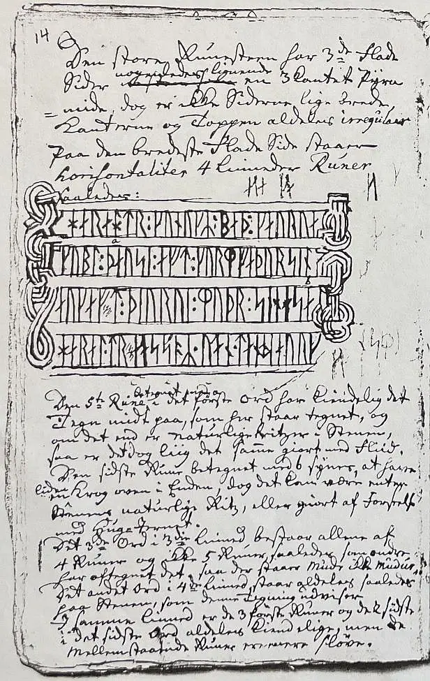
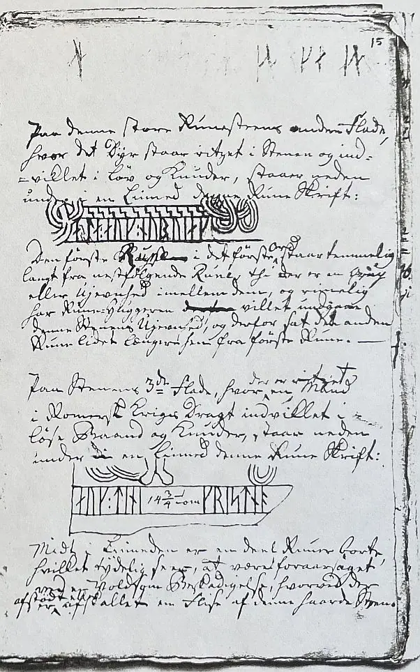
Dies sind Fotografien der S. 14 und S.15 einer Kopie die auch dort vorgehalten wird und die ich im Antiqvarisk-Topografisk Arkiv am 28.09.2022 fertigen durfte. Auf den beiden Seiten handelt er den großen Runenstein ab.
Text:
Den store runesten har 3 flade sider, nogenlunde lignende en 3 kantet pyramide, dog er ikke siderne lige brede, kanterne og toppen aldeles irregulær. På den bredeste flade side staar horisontaliter 4 linneder Runer således:
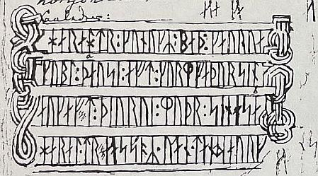
Den femte rune betegnet under a i det første ord har kendeligt det tegn midt på, som her står tegnet, og om det end er naturlige ridser i stenen, så er det dog lig det samme gjort med flid. Den sidste rune betegnet med b synes at have en liden krog oven i enden, dog det kan være enten stenens naturlige ridse, eller gjort af forseelse med huggejernet.
Det 3. ord i 3. linje består alene af 4 runer og ikke 5 runer, således som andre har aftegnet det, så det står mudr og ikke mudur. Det andet ord i 4. linje står aldeles således på stenen, som denne tegning udviser. I samme linje er de 3 første runer og de 2 sidste i det sidste ord aldeles kendelige, men de mellemstående runer er mere sløve [dvs. utydelige].
På denne store runestens anden flade, hvor det dyr står ridset i stenen og indviklet i løv og knuder, står neden under i en linje denne runeskrift:
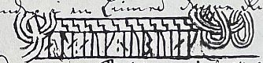
Den første rune i det første ord står temmelig langt fra næstfølgende rune, thi der er en gang eller ujævnhed imellem dem, og rimelig har rune-huggeren villet undgå denne stenens ujævnhed, og derfor sat den anden rune lidt længere hen fra første rune.
Pa stenens 3. flade, hvor der er ridset en mand i romersk krigsdragt indviklet i løse bånd og knuder, står neden under i en linje denne runeskrift:
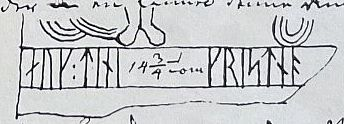
Midt i linjen er en del runer borte, hvilket tydeligt ses at være forårsaget ved en voldsom beskadigelse, hvorved der er afstødt eller afskallet en flise af denne hårde sten.
Übersetzung:
"Der große Runenstein hat drei flache Seiten, die in etwa einer dreieckigen Pyramide ähneln, allerdings sind die Seiten nicht gleich breit, die Kanten und die Oberseite sind völlig unregelmäßig. Auf der breitesten flachen Seite stehen 4 Runenlinien horizontal wie folgt:
Die fünfte Rune, die im ersten Wort unter a bezeichnet ist, hat eindeutig das Zeichen in der Mitte, das hier das Zeichen ist, und selbst wenn es sich um natürliche Kratzer im Stein handelt, ist es dennoch dasselbe, das mit Sorgfalt ausgeführt wurde. Die letzte mit b markierte Rune scheint oben am Ende einen kleinen Haken zu haben, aber es kann entweder ein natürlicher Kratzer auf dem Stein oder aus Versehen mit dem Meißel entstanden sein.
Das 3. Wort in der 3. Zeile besteht nur aus 4 Runen und nicht aus 5 Runen, wie andere es markiert haben, also lautet es mudr und nicht mudur*. Das zweite Wort in der 4. Zeile ist genau so, wie es auf dem Stein erscheint, wie diese Zeichnung zeigt. In derselben Zeile sind die ersten 3 Runen und die letzten 2 im letzten Wort perfekt erkennbar, aber die dazwischen liegenden Runen sind langweiliger [d. h. undeutlich].
Auf der anderen Seite dieses großen Runensteins, wo das in den Stein geritzte und in Blätter und Knoten verwickelte Tier steht, befindet sich unten in einer Linie diese Runeninschrift:
Die erste Rune im ersten Wort ist ziemlich weit von der nächsten Rune entfernt, da zwischen ihnen ein Durchgang oder eine Unebenheit besteht, und der Runenschnitzer wollte diese Unebenheit des Steins vernünftigerweise vermeiden und platzierte daher die zweite Rune etwas weiter entfernt die erste Rune.
Auf der dritten Seite des Steins, wo ein Mann in römischer Kriegskleidung, der in losen Bändern und Knoten verwickelt ist, eingeritzt ist, befindet sich darunter in einer Zeile diese Runenschrift:
In der Mitte der Linie sind einige Runen verschwunden, was eindeutig auf eine schwere Beschädigung zurückzuführen ist, bei der ein Stück dieses harten Steins abgeschlagen wurde oder abgeblättert ist.
*Da hat sich Herr Abildgaard natürlich getäuscht, wie man auf diesem Foto von Roberto Fortuna - Ausschnitt der 3. Linie mit dem 3. Wort - eindeutig sieht - da steht "muþur".
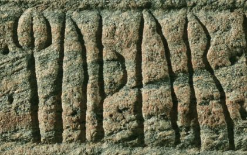
Quellenangabe: Søren Abildgaard i Jelling 1771
Im Jahr 1797 kam der Buchdrucker Aosmann Isfron von Vejle nach Jelling, wo er mit größter Aufmerksamkeit die Hügel und die beiden Runensteine studierte, diese Raritäten und Reliquien des Alters, die sonst nirgends in den nordischen Königreichen und Ländern zu finden sind." Zu seinem Besuch fertigte er ein kleines Manuskript mit dem Titel "Monumentum Jellingense" an, das in Zeichnungen und Texten die Denkmäler so beschreibt, wie Isfron sie sah.


Das erhaltene Originalexemplar des Manuskripts befindet sich in der Handschriftensammlung der Königlichen Bibliothek in Kopenhagen und wird dort unter NKS 801 kvart vorgehalten (2 Teile - einmal das Manuskript - 10 beschriebene Seiten - und einmal die daraus entnommene Zeichnung der Monumente). Dieses Kleinod habe ich bei meinem dortigen Besuch am Montag, 26.09.2022, in Händen halten und fotografieren dürfen - siehe oben. Aus den einzelnen Fotos habe ich eine komplette Ausgabe des Originals als pdf-Datei erstellt.
Eine Kopie von Isfrons Werk gehört heute dem Nationalmuseum Kopenhagen. Die wurde digitalisiert und kann in 9 einzelnen Teilen hier abgerufen werden. Professor Jens Jacob Asmussen Worsaae (*14.03.1821 - 15.08.1885, dänischer Archäologe und Vorgeschichtler)
 Bildquelle: Fotografie
zw. 1863-1900 von Fotograf Budtz Müller
(*26.12.1837 -
30.12.1884) -
Det Kgl. Biblioteks billedsamling - Lizenz:
Public Domain
Bildquelle: Fotografie
zw. 1863-1900 von Fotograf Budtz Müller
(*26.12.1837 -
30.12.1884) -
Det Kgl. Biblioteks billedsamling - Lizenz:
Public Domainerhielt dieses Exemplar wohl 1861 von König König Friedrich VII. (*06.10.1808 - 15.11.1863)
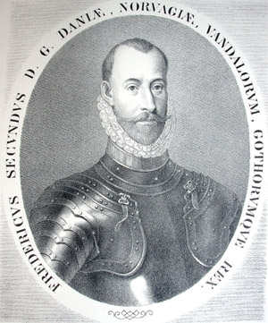
Bildquelle: Wikipedia - Lizenz: Public Domain und übergab es später dem (damaligen) Museum für Nordische Altertümer in Kopenhagen. Der König selbst muss die Abschrift in Jelling erhalten haben.Isfrons Zeichnungen zeigen die
Runensteine von
Die traditionellen Namen
der beiden Hügel,
Aus dem Manuskript geht hervor, dass
Isfron gebürtiger Isländer war. 1797
war er Drucker in Vejle, muss aber schon früher nach
Dänemark gekommen sein, denn 1785 hatte er die
Staatsbürgerschaft als Buchbinder in der Stadt Fåborg auf Fünen erhalten, wo er
im Staatsbürgerschaftsprotokoll unter dem Namen
Aosmann Isfron aufgeführt ist.
Das Originalexemplar
von
Monumentum Jellingense ist mit einem Wasserzeichen
versehen, in dem zu lesen ist: C R VII ∙ HRS ∙ Engelsholm.
Engelsholm Papiermühle erhielt eine königliches Erlaubnis
zum Betrieb des Gewerbes von
Christian VII. und die Initialen "H R S"
beziehen sich auf den Papiermeister Henrich Rudolf Schmith. Das
Gut
Engelsholm liegt knapp 10 km südwestlich von
Jelling.
Es wurde 1731 vom unternehmungslustigen Kaufmann
Gerhard Hansen de Lichtenberg (*09.04.1697 -19.07.1764)
erworben. Zu dieser Zeit herrschte Papiermangel, und
Lichtenberg beschloss 1733, in Randbøldal,
nur wenige Kilometer vom Anwesen entfernt, eine Papierfabrik zu
errichten. Das Unternehmen hieß Engelsholm und wurde an
einen niederländischen Papierhersteller verpachtet. Sie war ein
großer Erfolg und war bis 1799 die
einzige Papierfabrik in Jütland.
Bei meinem Besuch in der Königlichen Bibliothek in Kopenhagen am 27.09.2022 fand ich in der Hinterlassenschaft von P. G. Thorsen (*07.08.1811 - 06.05.1883, Bibliothekar, Runenforscher und Historiker)
 Bildquelle: Fotografie
zw. 1863-1900 von
Fotograf Budtz Müller (*26.12.1837 -
30.12.1884) -
Det Kgl. Biblioteks billedsamling - Lizenz:
Public Domain
Bildquelle: Fotografie
zw. 1863-1900 von
Fotograf Budtz Müller (*26.12.1837 -
30.12.1884) -
Det Kgl. Biblioteks billedsamling - Lizenz:
Public Domaindieses Dokument, das mit der Jahreszahl 1796 versehen ist und augenscheinlich von Aosmann Isfron stammt.
Thorsens Nachlass (Bezeichnet als: P. G. Thorsens optegnelser, tegninger m.m. vedrørende runer og runemindesmærker - überführt aus der Kopenhagener Universitätsbibliothek 1929 - Gemäß Ministerialschreiben vom 04.03.1929; früher benannt als Additamenta 612 kvart) - findet sich heutzutage in der Königlichen Bibliotek unter NKS 3296 kvart (in mehreren einzelnen Pappschachteln). Den Fund habe ich in der Schachtel 17 - Æske 17: Tillæg til Sønderjylland, Nørrejylland - gemacht.

Handelt es sich dabei um ein bis dato unbekanntes Original von Aosmann Isfron? War er schon 1796 und nicht erst 1797 in Jelling? Ich habe versucht den Fall aufzuklären und deshalb in Kopenhagen den Dozent/Professor Michael Lerche Nielsen, Universität Kopenhagen Nordiske Studier og Sprogvidenskab, Arkiv for Navneforskning og Runologi, heute (17.07.2023) um seine Einschätzung gebeten. Er meinte dazu: "Es ist schwierig, die verschiedenen Versionen zu durchschauen. Möglicherweise kopierte er es 1796 aus dem Werk von Ole Worm (Anmerkung: Dessen Danicorum Monumentorum Libri Sex, Hafniae = Kopenhagen, 1643). Er bezieht sich auf die Edda von Sæmund und Snorre ich vermute, dass er einst als Abschreiber isländischer Sagen gearbeitet hat. Er fertigte diese Kopien für Menschen an, die er beeindrucken wollte und von denen er sich Gefallen/Unterstützung erhoffte. Sie scheinen mit der gleichen etwas unbeholfenen Schönschrift geschrieben worden zu sein."
Von Martin Friedrich Arendt (* 22. Februar 1773 in Altona; April 1823 in der Nähe von Venedig/Italien, deutscher Botaniker und Altertumsforscher)
 Bildquelle: Eigenes Foto aus seiner Hinterlassenschaft im
Antikvarisk -Topografisk Arkiv - Public
Domain
Bildquelle: Eigenes Foto aus seiner Hinterlassenschaft im
Antikvarisk -Topografisk Arkiv - Public
Domain
haben sich im Antikvarisk -Topografisk Arkiv in Kopenhagen drei Aufzeichnungen zu dem großen Runenstein von Jelling, von denen ein Blatt auf den 06.01.1808 datiert ist, erhalten (Auf kleinem, ausgeschnittenem Papier, unterschiedliche Maße, mit Bleistift / Tusche gezeichnet). Bei meinem Besuch in diesem Archiv am 27.09.2022 durfte ich diese Notizen selbst fotografieren. Martin Friedrich Arendt war mit Johann Wolfgang von Goethe (*28.08.1749 - 22.03.1832, Dichter und Naturforscher) bekannt und wurde von ihm als "wandernder Antiquar" betitelt.

Das
ist offensichtlich eine Kopie der früheren Wiedergabe bei
Erik Pontoppidan
in seinem Werk von 1763 "Den
Danske Atlas" - siehe oben.
Einfach ausgeschnitten kann es meines Erachtens aber nicht sein, da der Eintrag
"Tab. IX" oben rechts und die Signatur "Jonas
Haas" rechts unten fehlt.


Jens Jacob Asmussen Worsaae (*14.03.1821 - 15.08.1885, dänischer Archäologe und Vorgeschichtler)
Bildquelle: Fotografie
zw. 1863-1900 von Fotograf Budtz Müller
(*26.12.1837 -
30.12.1884) -
Det Kgl. Biblioteks billedsamling - Lizenz:
Public Domain
hat in seinem Tagebuch "Notesbog
XX" aus dem Jahr 1859 diese Aufzeichnungen
zu
Jelling vorgenommen. Darüber steht allerdings
1856. Die Inschrift in Runenzeichen zum
Jelling
Stein von


Dessen Tagebücher werden heute in Kopenhagen in dem "Antikvarisk-Topografisk Arkiv" aufbewahrt, worüber ich bei meinem Besuch am 27.09.2022 Einsicht nehmen und diese Fotos anfertigen durfte.
Von Rasmus Henrik Kruse (*07.08.1796 - 30.05.1877, Landschaftsmaler und Antiquar)
 Bildquelle:
Det Kgl. Biblioteks billedsamling - Lizenz:
Public Domain
Bildquelle:
Det Kgl. Biblioteks billedsamling - Lizenz:
Public Domain
haben sich im "Antikvarisk-Topografisk Arkiv" in Kopenhagen in seinen Aufzeichnungen mit dem Titel "Nørre Jyllands Mærkværdigheder i det 19. Aarh. Hs. Bd 1-2 (med) Tillæg 1-2" seine Notizen zu Jelling aus dem Jahr 1857 - diesemal leider ohne Zeichnungen - bewahrt. Die finden sich genaugenommen im Band Tillæg II, S. 20-23 und dazu noch ergänzende Angaben auf den S. 31-35. Ich habe alles zusammen wiedergegeben - Infos zur Inschrift Jelling 2 finden sich auf der S. 23.


S. 20-23
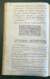 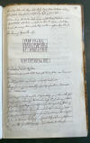


Ergänzende Infos S.
31-35


Dieses Werk wird heute in Kopenhagen, Nationalmuseum, Antikvarisk-Topografisk Arkiv, aufbewahrt. Dort durfte ich am Dienstag, 27.09.2022, zu Gast sein, die vier Bände in Händen halten und fotografieren.
In dem Werk von Jacob Kornerup (*19.11.1825 - 09.03.1913, dänischer Archäologe und Zeichner aus Roskilde)
 Bildquelle:
Wikipedia
- Lizenz:
Public Domain
Bildquelle:
Wikipedia
- Lizenz:
Public Domain
mit dem Titel "Kongehøiene i Jellinge og deres Undersøgelse efter Kong Frederik VII's Befaling i 1861" (mit einem Vorwort von J.J.A. Worsaae) aus dem Jahr 1875 geht es um die Ausgrabung der beiden Jelling Hügel im Jahr 1861, die auf Befehl des dänischen König Frederik VII. erfolgte. Darin sind zahlreiche Bildtafeln, darunter auch die "Tavle IV und V" zum Runenstein von Harald Blauzahn, die von Kornerup selbst gezeichnet wurden.
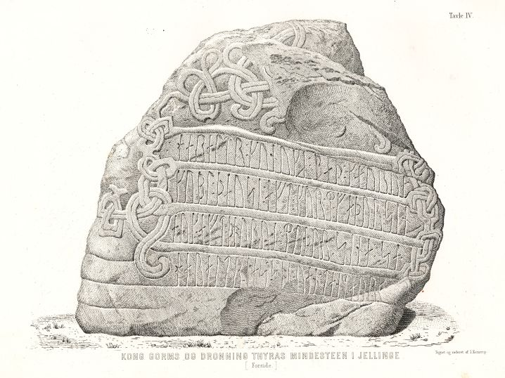
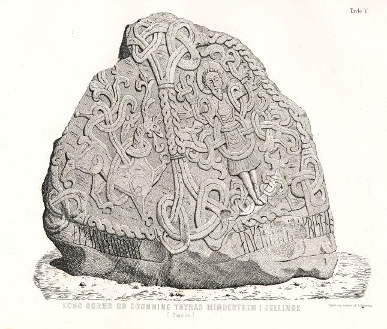
Quelle: Digitale Sammlung des Nationalmuseum Kopenhagen entnommen - Textseite - Bilderseite - Lizenz jeweils: CC-BY-SA. In dieser Sammlung finden sich unzählige Zeichnungen von Jacob Kornerup.
In den beiden großen dänischen Runenwerken wird dieser historische Runenstein selbstverständlich abgehandelt.
P. G. Thorsen (*07.08.1811 - 06.05.1883, Bibliothekar, Runenforscher und Historiker)
Bildquelle: Fotografie
zw. 1863-1900 von
Fotograf Budtz Müller (*26.12.1837 -
30.12.1884) -
Det Kgl. Biblioteks billedsamling - Lizenz:
Public Domain
hat in seinem Runenwerk "De danske runemindesmærker beskrevne og forklarede, anden Afdeling, Jyllands Runemindesmærker, Afbildninger og Text, I. Afbildninger, 1879" unter der Nr. 10 diese drei Zeichnungen von Magnus Petersen (*04.09.1827 - 01.02.1917, Archäologischer Zeichner und Restaurator) veröffentlicht - Textseite - Tierseite - Christusseite. Die habe ich aus dem Exemplar, das sich in meiner Sammlung befindet, eingescannt. Die Textseite ging aber aufgrund ihrer Größe nicht ganz drauf. Petersen wird von den Runologen zurecht als der beste Runensteinzeichner aller Zeiten tituliert! Diese geniale Wiedergabe der drei Runensteinseiten finde ich ansprechender als alle Fotografien!
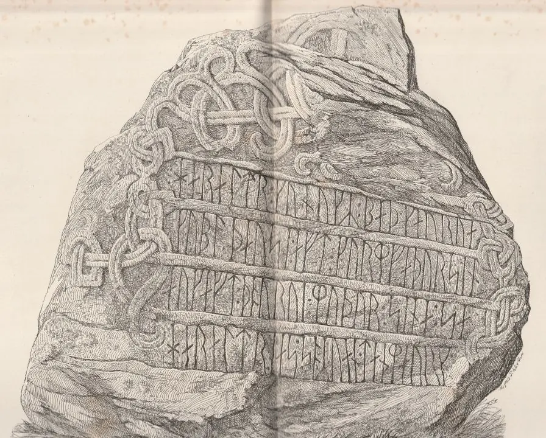
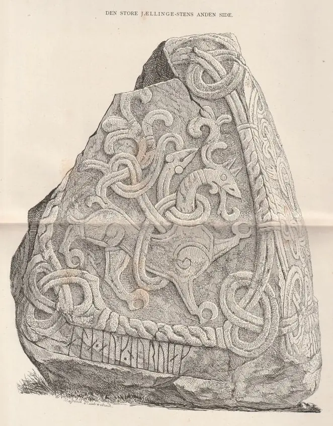
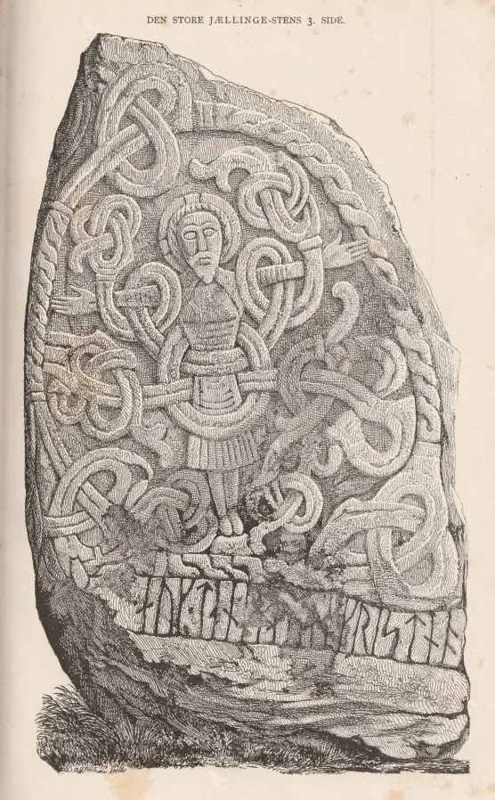
In seinem Textband aus dem Folgejahr 1880 hat er auf den S. 27 bis 30 seine Ausführungen zum "Den store Jællinge-Runesten" veröffentlicht.
Dessen Nachlass (Bezeichnet als: P. G. Thorsens optegnelser, tegninger m.m. vedrørende runer og runemindesmærker - überführt aus der Kopenhagener Universitätsbibliothek 1929 - Gemäß Ministerialschreiben vom 04.03.1929; früher benannt als Additamenta 612 kvart) - findet sich heutzutage in der Königlichen Bibliothek unter NKS 3296 kvart (in mehreren einzelnen Pappschachteln). In der Pappschachtel mit der Nummer 17 fand ich bei meinem dortigen Aufenthalt am Dienstag, 27.09.2022, insgesamt 13 Dokumente / Zeichnungen die sich mit Jelling befassen. Von Magnus Petersen habe ich diese drei Zeichnungen des Runensteins - die sicherlich als Druckvorlage für die o.a. Seiten gedient haben - abfotografiert, die er auf den 01.09. (Christus) und 02.09.1871 datiert hat. Da ich sie relativ groß wiedergeben möchte, habe ich sie als Miniatur - darauf Doppelklick zur vollen Größe - eingestellt.
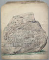 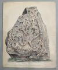 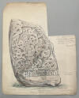


In der Pappschachtel 17 fanden sich noch weitere Dokumente zum Runenstein 2. Zum einen eine Zeichnung der Textseite von einem Herrn Adam Müller - Original stammt von 1835 -, dessen Name "A. Müller del." unteren der linken unteren Steinseite steht. In deren rechten unteren Ecke Thorsen vermerkt hat "P.G. Thorsen, 14. September 1843". Am rechten unteren Steinende taucht auch noch der Name "P. Schöler" auf. Hier sieht man deutlich, dass die Steinabsprengung unten mittig - siehe z.B. oben bei der Zeichnung von Jacob Kornerup von 1861- offenbar noch nicht vorhanden war.
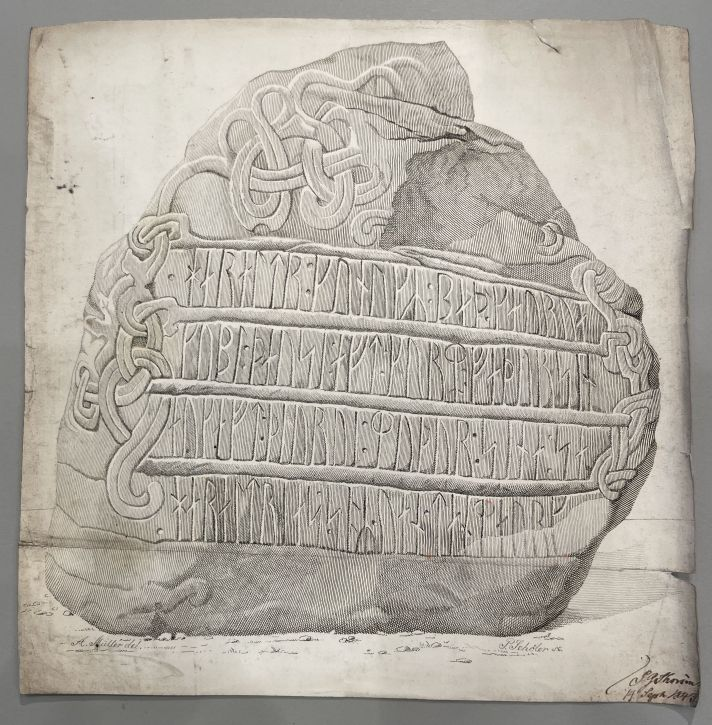
Außerdem fand ich noch diese Abschrift der Steininschrift die sich auf die Notizen von Abildgaard bezieht.
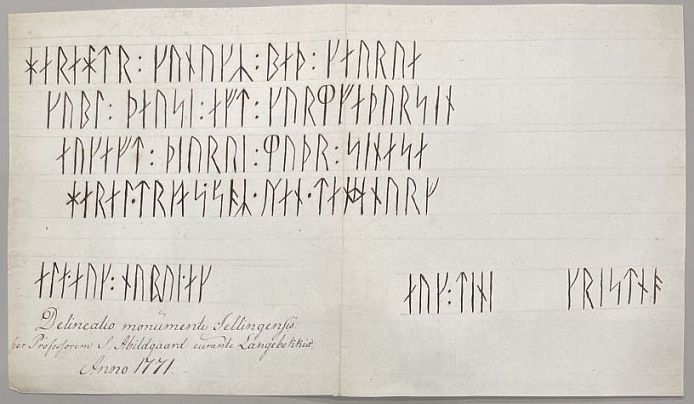
Bei meinen heutigen Recherchen habe ich festgestellt, dass ich in dieser Schachtel Nr. 17 auf eine Aufzeichnung vom "Königlichen Landvermesser Iver Peder Ellung (*1755 - 22.01.1820)" vom 14. Juni 1800 gestoßen bin, die zwar bei "Lis Jacobsen/Erik Moltke - Danmarks Runeindskrifter - 1942" in der Spalte 68, 1. Eintrag unter "19. årh." erwähnt wird, aber mit einem "" für "verschollen" gekennzeichnet wurde! Die Autoren beziehen sich auf den u.a. Eintrag in "Antiqvarisk Annaler IV, 1827" ab der S. 107-108, den ich hier (zugeschnitten) wiedergebe.
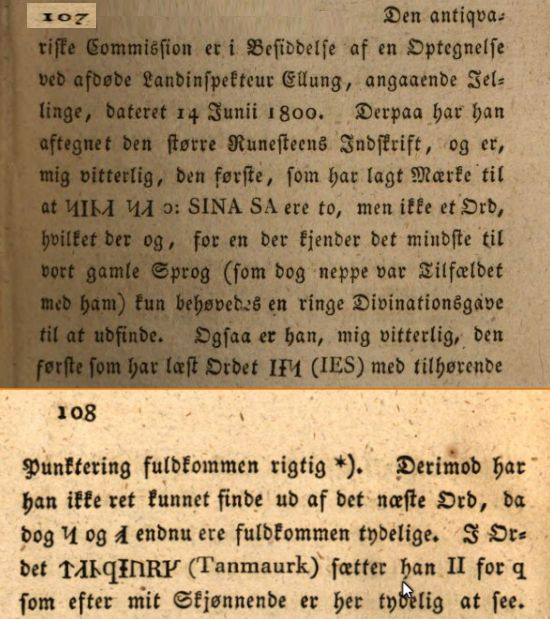
Dann kann ich doch hier nach wohl (mindestens) 85 Jahren das verschollene - 223 Jahre alte - Original Dokument präsentieren! Da P. G. Thorsen am 06.05.1883 verstarb vermute ich doch stark, dass dieses Dokument seither verschollen ist, dann wären es 140 Jahre!
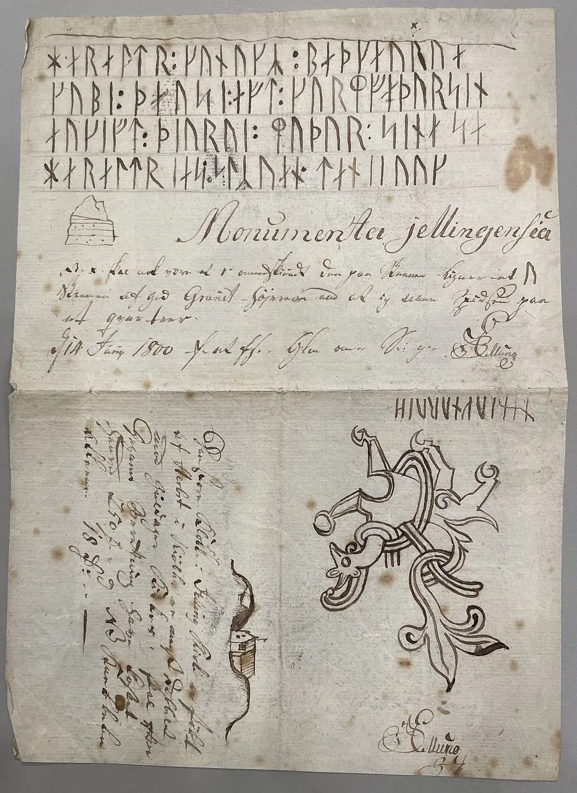
Die darin eingebundenen Zeichnungen habe ich hier nochmals separat aufbereitet.

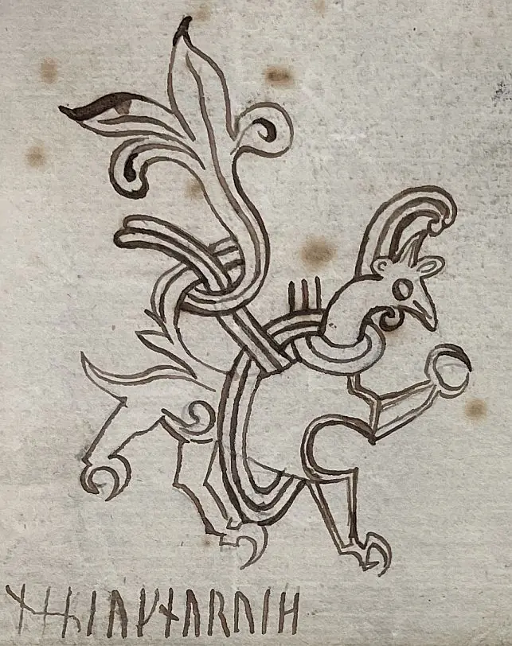
Diese u.a. Zeichnungen fertigte auch Magnus Petersen (*04.09.1827 - 01.02.1917, Archäologischer Zeichner und Restaurator)
 Bildquelle: Fotografie
von 1903 von Fotograf Marius Christensen
(*24.06.1874 -
25.06.1907) -
Det Kgl. Biblioteks billedsamling - Lizenz:
Public Domain
Bildquelle: Fotografie
von 1903 von Fotograf Marius Christensen
(*24.06.1874 -
25.06.1907) -
Det Kgl. Biblioteks billedsamling - Lizenz:
Public Domain
an - 1877 - diesmal für Ludv. F. A. Wimmer (*07.02.1839 - 29.04.1920, Philologe und Runenforscher)
Bildquelle:
Fotografie zw. 1877-1900 von Fotograf Hansen & Weller
-
Det Kgl. Biblioteks billedsamling - Lizenz:
Public Domain
und dessen großformatiges Runenwerk "De danske runemindesmærker undersøgte og tolkede af Ludv. F. A. Wimmer: Første Binds Anden Afdeling, De historiske Runemindesmærker, 1893-1895" - Nr. 1-2, S. 17 bis 47 - jeweilseigener Scan aus der in meinem Besitz befindlichen Ausgabe. Mit meinem Handscanner (Avision MiWand 2L Mobile Scanner) konnte ich die Zeichnung der Textseite aufgrund ihrer Größe - 24 x 27 cm - gerade noch scannen (am unteren Rand fehlt etwas von der Zeichnung, aber der Stein ist drauf!).
Ludv. F. A. Wimmer hielt sich am 25. bis 30. Juli 1878 und nochmals am 07./08. Juli 1882 in Jelling zu Forschungszwecken auf.
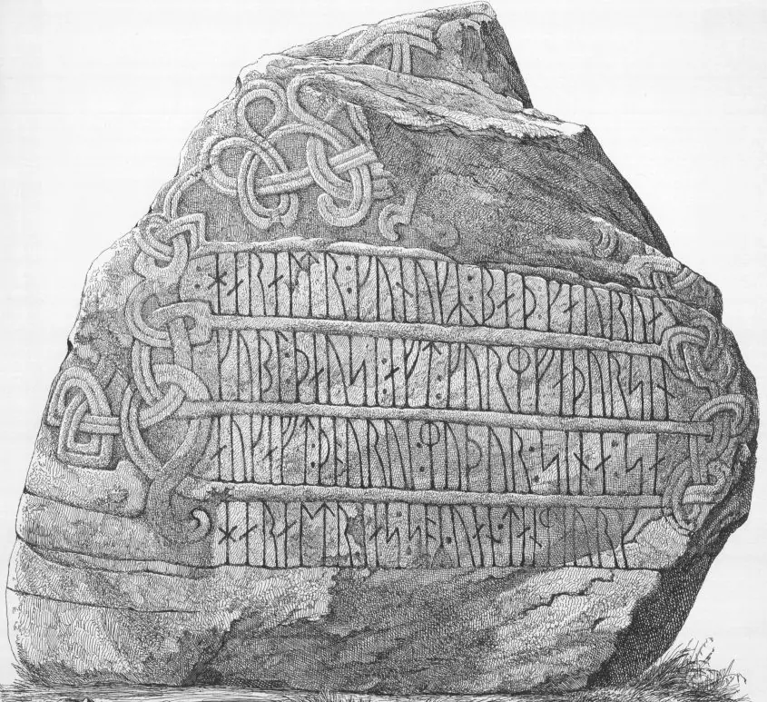
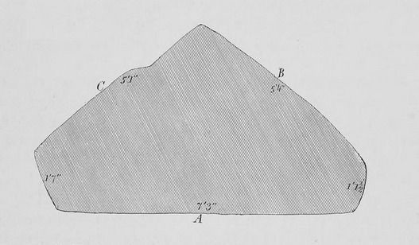
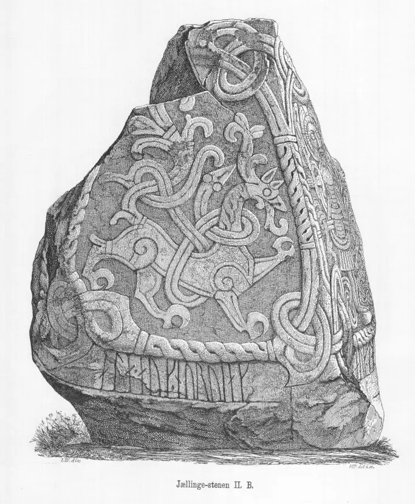
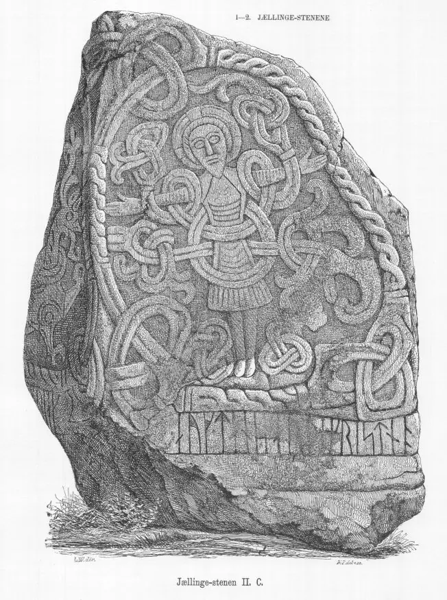
Ludv. F. A. Wimmer hat seine jahrelangen Aufzeichnungen der
"Kgl.
Bibliotek" in
Kopenhagen überlassen. Ein
Verzeichnis darüber wurde 1915 in Buchform herausgegeben
-
In seinen Unterlagen in der Bibliothek befinden sich unter "III - Originaltegninger af de danske Runemindesmærker, udførte paa Undersøgelsesrejserne af Magn. Petersen og kontrollerede paa Stedet af Ludv. Wimmer, samt Prøvetryk af de paa Grundlag af de nævnte Tegninger, Aftryk o. s. v. til De danske Runemindesmærker" udførte Afbildninger med Wimmers Rettelser"


seine Aufzeichnungen zu den Runensteinen von Jelling unter der Nr. 1-2, woraus ich bei meinem dortigen Besuch am 27.09.2022 diese Zeichnungen zum großen Runenstein von Magnus Petersen - die er auf den 25.07. / 26.07. / 27.07.1878 datiert hat - fotografieren durfte.
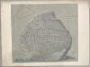 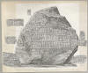 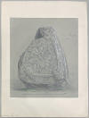


Darunter sind auch zwei Überarbeitungen von Ludv. F. A. Wimmer die er am 07./08. Juli 1882 zur Text- und zur Christusseite vorgenommen hat.
Von Erik Moltke (*04.04.1901 - 19.10.1984, Runologe, Historiker)
 Bildquelle: Scan von Buchumschlag "Runerne i Danmark og ders
oprindelse" - Erik Moltke - 1976 - Lizenz:
CC-BY-SA
Bildquelle: Scan von Buchumschlag "Runerne i Danmark og ders
oprindelse" - Erik Moltke - 1976 - Lizenz:
CC-BY-SA
findet sich in der Digitale Sammlung des Nationalmuseum in Kopenhagen leider nur ein Foto der "Tierseite" das er wohl am 19.08.1929 gemacht hat - versteh ich jetzt nicht!
Bildquelle: Digitale Bildsammlung Nationalmuseum Kopenhagen - Bild - Lizenz: CC BY-SA 4.0
Im Vorfeld zu dem 2016 erschienenen Buch von Lisbeth M. Imer (*1973, Runologin am Nationalmuseum Kopenhagen) "Danmarks Runesten - en fortælling" reiste sie mit dem Fotografen Roberto Fortuna zur Bestandsaufnahme durch die Lande. Dieser hat die Runensteine abends bei Dunkelheit mit Schräglicht aufgenommen und darüber wirklich herausragende Fotos erzielt. Diese wirklich tollen Aufnahmen entstanden am 14.10.2010.
Bildquelle: Digitale Bildsammlung Nationalmuseum Kopenhagen - Bild 1 / Bild 2 / Bild 3 - Lizenz jeweils CC BY-SA 4.0


Untersuchungen zum Standort des grossen Jellingsteins wurden bereits mehrfach vorgenommen. Bei der Wiederaufrichtung durch Caspar Markdanner (*1533 - 22.09.1618 aus Søgard, Königlicher Beamter, Lehnsherr auf Koldinghus) im Jahr 1586, der ihn umgefallen und teils von Erde bedeckt vorgefunden hatte, wurde er offenbar nur leicht versetzt aufgestellt. Unter dem Strich stand er also schon immer nahezu an seinem heutigen Platz. Die letzten Untersuchungen dazu fanden im Zusammenhang mit der Errichtung des Schutzbaus zw. dem 26.04 - 25.08.2011 statt und bekräftigten nochmals diese Erkenntnis. Dabei war am 16.06.2011 das komplette Fundment von 1586 freigelegt worden. Im Jahr 1942 von Ejnar Dyggve (*17.10.1887 - 06.08.1961, Architekt, Archäologe) und nochmals 1981 durch Knud Jepsen Krogh (*1932 - 2023, Archäologe, Museumsinspektor am Nationalmuseum Kopenhagen) waren an der Stelle schon Untersuchungen, 1981 auch eine Verstärkung des vorhandenen Fundaments vorgenommen worden.
Diese beiden undatierten Aufnahmen von einem unbekannten Fotograf - vermutlich 1940er Jahre - frei von Urheberrechten - sind in der Digitale Bildersammlung des Nationalmuseums Kopenhagen - Bild 1 / Bild 2 - abrufbar.
In der Nacht vom 11./12.02.2011 hat ein 15-jähriger autistischer Jugendlicher aus Jelling die Eingangstür zur Kirche aber auch die Inschrift- und Tierseite des großen Runenstein mit einem Graffiti "GELWANE" in grüner Farbe verschandelt. Der kleine Runenstein war ebenfalls betroffen, war aber über seinen Winterschutz unter einem Bretterverschlag geschützt gewesen. Die Restauratorin Susanne Trudsø vom Nationalmuseum konnte die auf den Stein gesprühte grüne Farbe glücklicherweise zeitnah entfernen, nachdem zuvor zahlreiche Experten in Skandinavien über die beste Vorgehensweise beraten hatten.
Bildquelle: Nationalmuseum Kopenhagen
Hier kommt man zu einem 114-seitigen Bericht mit dem Titel "Beretning for tilsyn og undersøgelse i forbindelse med etablering af overdækningen af runestenene i Jelling i 2011". Übersetzung: "Bericht zur Überwachung und Untersuchung im Zusammenhang mit der Errichtung der Abdeckung der Runensteine in Jelling im Jahr 2011".
Darin finden sich auf der S. 87 in der pdf-Datei diese beiden Fotos zum Fundament für den Schutzbau. Fotograf dort nicht angegeben. Der Einbau des Sockelrahmens für den großen Stein erfolgte am 03.07.2011 vor den Sommerferien. Der Rahmen für den kleinen Runenstein kam nach den Ferien dazu.

In der Abhandlung "Afskærmning af Jellingstenene" - Ausschnitt des Titelbildes siehe unten / abgerufen 19.11.2023 - vom 04.02.2010 wird über die offene Architektur Ausschreibung vom 26.08.2009 für den Schutzbau der beiden Runensteine und die dazu eingereichten 157 verschiedenen Vorschläge berichtet. Der "Forslag 86/21708" erhielt die meiste Zustimmung und das ausgelobte Preisgeld in Höhe von 250.000 DKK (ca. 33.500 ) ging darüber an die in Kopenhagen angesiedelten "NOBEL arkitekter" mit ihrer Projektgruppe.

Bereits 1823 hatte der Pfarrer in Jelling, Chresten Sørensen, dem Bezirksgouverneur zusammen mit der u.a. Zeichnung vorgeschlagen, dass man ein dreieckiges, spitzes Ziegeldach erbaut, um die Runensteine gegen Regen und Schneeregen, zu schützen. An der Spitze des großen Steins war ein alter, großer Riss beobachtet worden. Da zu dieser Initiative keine weiteren Informationen vorliegen, wurde sie vermutlich nicht umgesetzt.

Quelle: Steen Hvass - Jelling Monumenterne deres historie og bevaring - 2011 - S. 16 - abgerufen 19.11.2023
An diesem Foto der Christusseite von 1897 von H. A. Kjær, Nationalmuseum, sieht man auch extrem deutlich, dass zahlreiche Flechten die Steinoberfläche eingenommen hatten. Algen, Flechten und Moos gab es vermutlich schon immer auf den beiden Runensteinen. Die schriftlichen Quellen erwähnen, dass diesbezüglich Reinigungen in den Jahren 1820, 1823, 1861, 1902, 1916, 1938 und 194254 durchgeführt wurden.
Bildquelle: "Runestenene i Jelling -Undersøgelse af bevaringstilstand - Rapport Marts 2008" - Seite 27 - abgerufen 19.11.2023

Quelle: Steen Hvass - Jelling Monumenterne deres historie og bevaring - 2011 - S. 17 - abgerufen 19.11.2023
In den folgenden Jahren gab es Grund für eine wachsende Besorgnis im Hinblick auf den Zustand beider Runensteine. Zu genauen Erfassung wurden beide Steine im Jahr 2007 einer damals völlig neuen Methode, einem 3D Lichtscan, unterzogen. Dabei wurden zahlreiche Absprengungen (im Vergleich zu einer exakten Kopie von 1984) und Hohlräume erkannt, die bei Eindringen von Wasser und hinzukommendem Frost enorme Schäden für die Zukunft befürchten ließen. Unten eine Darstellung dazu: Grün = Risse / Blau = Absprengungen / Rot = Hohlräume
Quelle:
Steen
Hvass -
Jelling Monumenterne deres historie og bevaring - 2011 - S. 19 -
abgerufen 19.11.2023.
Am
27. und 28.04.2009 wurde die rechts vom Kircheneingang
und nur ca. 5 Meter von den beiden Runensteinen befindliche alte Linde
gefällt. Der Baum und seine Blätter wurden als primäre Quelle der
Verschlechterung des Erhaltungszustandes der Steine ausgemacht, da darüber
zusätzliche Mengen Regens auf die Steine niedergehen.
Durch die Baumfällaktion versprach man sich eine
Reduzierung des Niederschlags auf die Runensteine um etwa
2/3.
In dem u.a. Bericht von 2008 heißt es aber auch: "...Der Algen- und Flechtenbewuchs auf dem großen Runenstein kann nämlich auch darauf zurückzuführen sein, dass an der Stelle eine Linde wächst. Linden sind für ihre Honigtauproduktion in der Vegetationsperiode bekannt (Vgl. Landschaftsarchitekt Jesper Christiansen, Frilandsmuseet). Linden sind ein bevorzugter Lebensraum für Blattläuse. Die Blattläuse ernähren sich, indem sie Zucker vom Baum saugen. Anschließend wird der gelöste Zuckerstoff - der Honigtau - über den Kot ausgeschieden. Honigtau ist eine Nahrungsquelle für Mikroorganismen, auch für den Bewuchs des Runensteins. Das Vorkommen von Blattläusen wurde 2007 durch eine Inspektion bestätigt."
Die große Wurzel der Linde wurde im Boden belassen, um die archäologischen Schichten nicht zu zerstören, der Baumstumpf aber bis kurz unter die Erdoberfläche abgefräst.
Nach Beratungen mit dem Weltkulturerbekomitee der UNESCO in Paris kam es dann im Hinblick auf eine optimale Sicherung in kontrollierter Klimaumgebung zu der o.a Ausschreibung für einen Ideenwettbewerb zu einem Schutzbau im Jahr 2009. Der Schutzbau konnte dann mit einer Spende der VELUX Stiftung und einer außerplanmäßigen Bewilligung des Kultusministeriums realisiert und am Sonntag, 04.12.2011, eingeweiht werden. Meines Erachtens ein wirklich gelungener, unaufdringlicher Schutzbau mit optimalem Schutzbedingungen und bestem Licht zur Abend-/Nachtzeit.
An der Stelle möchte ich auf diesen 59-seitigen Bericht zum Bewahrungszustand mit dem Titel "Runestenene i Jelling - Undersøgelse af bevaringstilstand - Rapport Marts 2008" sowie die dazugehörige 29-seitige Beilage "Runestenene i Jelling - Undersøgelse af bevaringstilstand - Bilag - Marts 2008" hinweisen, die sich ausführlich mit dem Zustand und den Schäden über die Jahrhunderte beschäftigen und zahlreiches Bildmaterial beinhalten.
In Varde stehen neben dem Varde Museum Kopien der beiden Jelling Runensteine die mit Farbe ausgemalt sind. Die Exemplare wurden vom Großhändler Cornelius Stau (*27.07.1845 - 18.12.1926 - link-LIVES - Melderegister - Bestattungsprotokoll) gestiftet, der am 11.05.1912 zusammen mit seiner Frau Elisabeth Juliette Christine Stau, geb. Madsen (*16.12.1854 -16.10.1915 - link-LIVES - Konfirmation - Melderegister - Bestattungsprotokoll) das Varde Museum gegründet / eröffnet hatte.

Bildquelle: arkiv.dk / Varde Lokalhistoriske Arkiv - Lizenz: CC BY-SA 4.0 - Fotografie um 1900 - Fotograf unbekannt
Da sie selbst nie Kinder hatten, gaben sie einen Teil ihres beträchtlichen Vermögens für das Varde Museum aus. Das Museumsgebäude wurde vom Schlossarchitekten Thorvald Jørgensen (*27.06.1867 - 15.05.1946)
 Bildquelle:
Wikipedia - Lizenz:
Public Domain
Bildquelle:
Wikipedia - Lizenz:
Public Domain
entworfen, der unter anderem war hinter den Zeichnungen für Schloss Christiansborg in Kopenhagen. Mit dem Bau des Museums beauftragten sie einen der geschicktesten Maurer der Stadt, Henrik Ferdinand Hansen (*06.08.1836 - 06.10.1922, später auch Bürgermeister von Varde).
 Bildquelle:
arkiv.dk - Lizenz:
Public Domain
Bildquelle:
arkiv.dk - Lizenz:
Public Domain
Cornelius Stau leitete selbst den Bau und die Einrichtung des Hauses, das 1914 fertiggestellt wurde. Er legte auch den Grundstein für die große Gemälde- und Kunstsammlung des Varde Museums viele der in der Sammlung des Museums enthaltenen Objekte stammten direkt aus den Wohnzimmern des Paares. Es waren nicht nur teure Antiquitäten, die Stau darin ausstellen wollte, sondern auch typische Dinge wie Jyde-Töpfe und Ethnographie aus entfernten Regionen wie Afrika und Grönland. Die Bürger Vardes sollten die Möglichkeit gegeben haben, sich im Museum niederzulassen und sich wohl zu fühlen, praktisch mit allem, von bildender Kunst über grönländische Schlittenhunde, Straußeneier aus Afrika, Bauernkultur und nicht zuletzt mit der Vorgeschichte Dänemarks. 1915 schenkte das Paar dem Museum ein Paar Kopien der Goldhörner von Gallehus.
Cornelius und
Elisabeth Stau lebten in
Kopenhagen,
stammten aber ursprünglich beide aus der
Varde-Gegend.
Nach dem Tod seiner Frau beschloss Cornelius Stau, dem Museum zwei
exakte Kopien der beiden
Jelling-Steine zu
schenken.
Seinem Wunsch, das Geschenk an Elisabeths Geburtstag am
16. Dezember zu enthüllen, wurde entsprochen und die
monumentalen Abgüsse von Hans Christian Berg direkt
vor dem Haupteingang des
Museums aufgestellt.
Später wurden sie an ihren heutigen Standort nordöstlich des Museums verlegt.
In den 1970er Jahrenn war der Runologe
Erik Moltke
für die Farbwahl des
großen Runensteins verantwortlich..
Diee
Runensteine wurden Ende der 1970er Jahre schon
einmal renoviert. Ende 2020 wurden sie von dem
Museumsangestellten Bent Ejner Nielsen noch neu angemalt, bevor er
nach 38 Jahren im Museum in Rente ging.


Diese Fotos habe ich im Rahmen meiner 2022er
Jütland Wikingertour
am Montag, 30.05.2022, aufgenommen.
Über diesen Link kann man die - in dänischer Sprache gehaltene und reich bebilderte - Abhandlung "Vardes Jellingsten nu igen i farver - Af Lene B. Frandsen", die sich im "opdatering - Årbog for Vardemuseerne & Ringkøbing-Skjern Museum, 2020, S. 148-157" befindet, abrufen - übersetzt: "Vardes Jellingsten jetzt wieder in Farbe - Von Lene B. Frandsen". Darin wird die Geschichte zu den beiden Runensteinkopien umfassen erzählt und zur neuen Farbgebung berichtet.
Im Sommer 1983 war ich erstmals in Dänemark in einem 3-wöchigen Urlaub in einemm Ferienhaus bei Købmand Hansen am Henne Strand. Dabei führte uns der Weg auch einmal zu diesen ca. 25 km entfernten Kopien der Jelling Runensteine. Damals habe ich noch ganz normale Fotos gemacht, bevor ich dann aus Kostengründen auf Dia umstieg. Aber ich kann mich nicht mehr erinnern, mit welchem Fotoapparat ich diese drei Bilder (Scan vom 12.07.2023) gemacht habe - die Qualität war garnicht mal so schlecht. Der Herr hinter der Ansicht mit der Christusseite war mein damaliger Chef, der mit mir und einem weiteren Kollegen und unseren Frauen den Urlaub verbrachte. Er hat uns sechs - einer saß dabei im Kofferraum - mit seinemm VW 412 Variant durchs Land gefahren - auch nach Jelling- und ihm habe ich darüber letztlich mein tolles Hobby zu verdanken - DANKE Klaus!


Es gibt über die Welt verteilt mehrere Kopien des Runensteins von Harald Blauzahn, wie man hier entdecken kann.
Eine weitere farbige Kopie des großen Jellingsteines steht in Viborg, Vognmagervej 144, auf einem Firmengelände.
Bildquelle: Goggle Street View - abgerufen: 31.12.2024
Die Kopie wurde von derr JP Groupp im Auftrag des Moesgård Museums in der Nähe vonn Aarhus für eine Sonderausstellung um 1980 angefertigt. Die Steinkopie ist hohl. Sie besteht aus dem Gussmaterial Glyptonit, einem Material, dessen Eigenschaften dem von Sandstein am nächsten kommen. Die Formen für den Guss basieren auf Originalabdrücken aus Silikonkautschuk, und der Glyptonit ist so eingefärbt, dass er dem Original-Runenstein möglichst genau entspricht. Die Farbgebung wurde vom Moesgård Museum rekonstruiert.
Seitt 1911 steht in Rouen/Frankreich eine andere Kopie des Runensteins von Harald Blauzahn, die ich am 21.05.2016 bei einer Normandie Bus-Tour selbst fotografiert habe. Diese Kopie wurde der Stadt Rouen anlässlich der 1000-Jahrfeier der Normandie, von der dänischen Carlsberg Stiftung aus Kopenhagen zum Geschenk gemacht. In Sichtweite steht eine Statue von Rollo, Herzog der Normandie, die vom Bildhauer Arsene Letellier 1863 geschaffen und im Jahre 1865 in Rouen aufgestellt wurde.


In der niederländischen Stadt Utrecht steht eine Kopie des Runensteins von Harald Blauzahn in Jelling auf dem Domplatz am Eingang zum Klosterhof (in Google Maps hier leider von Infotafeln verdeckt), der die Utrechter Kathedrale mit dem Kloster verbindet. Der Stein wurde von der Vereinigung Dänischer Freunde Hollands anlässlich des 300-jährigen Jubiläums der Universität Utrecht im Jahr 1936 gespendet. Hinter der Schenkung stand Gustav Lind, der Gründer des Trapholt-Kunstmuseums in Kolding. Hier kann man eine Info von ""Jellingprojektet" abrufen.

Bereits in der Wikingerzeit wird von Dänen in Utrecht berichtet, allerdings mit einer ganz anderen Absicht. Eine Flotte Dänen ging 834 nach Friesland und erreichte über Utrecht den bekannten Handelsposten Dorestad, heute Wijk bij Duurstede, der geplündert und zerstört wurde. Utrecht liegt nördlich dess Flusses Lek, einer der Mündungen des Rheins in die Nordseee, und wie unzählige Städte im Nordwesten Europas war auch diese Stadt im 8. Jahrhundert mehrmals den Verwüstungen der Wikinger ausgesetzt.
Willibrord, der erste bekannte Missionar unter den Dänenn, starb 739 als Bischof von Utrecht. Sein Leben wird von seinem Landsmann, dem englischen Mönch Alkuin, beschrieben, der von 781 bis zu seinem Tod im Jahr 806 als Berater am Hofe Karls des Großen fungierte. Alkuin erzählt in der Vita S. Willibrordi, wie Willibrord nach einem vergeblichen Missionsaufenthalt in Friesland zu den wilden Bräuchen der Dänen überging. Das Treffen mit dem König der Dänen, Ongendus (oderr Angantyr), fand wahrscheinlich im frühen 7. Jahrhundert statt. Ongendus, der laut Alkuin grausamer als ein wildes Tier und härter als ein Stein war, ließ sich nicht zum Christentum bekehren. Willibrord entschied sich daher für eine Reise und nahm 30 Jungen mit zurück in dass Königreich Frankreich. Die Jungen wurden auf der Reise unterrichtet und anschließend getauft. Ob sie jemals nach Hause zurückkehrten, ist nicht bekannt.
Weitere Kopien des großen Runensteins von Jelling finden sich noch an weiteren Ort über die Erde verteilt - eine Auflistung findet sich auf einerr Webseite des Jellingprojektet.
Am 25.09.2022 habe ich im Rahmen meines Kopenhagen Studientripps einee Radtour nach Roskilde gemacht und auf dem Hinweg zunächst in DK-2650 Hvidovre, 355 Hvidovrevej, Boligselskabet Friheden - Geodaten: 55.625394, 12.482437 - Station gemacht. Im Jahre 1933 hat man eine in Beton gegossene Kopie des großen Runensteins aus Jelling / Harald Blauzahns Runenstein anfertigen lassen. Diesee Kopie wurde 1943-45 durch den Künstler Rudolf Broby-Johansen (*25.11.1925 - 09.08.1987) farbig gestaltet. Sie stand dann lange Jahre im Innenhofgarten des Nationalmuseum in Kopenhagen.
Bildquelle: Digitale Bildsammlung Nationalmuseum Kopenhagen - Bild - Lizenz: CC BY-SA 4.0 - Fotograf: Lennart Larsen
Als dort in den 1990er Jahren Umgestaltungen vorgenommen wurden, ließ man eine neue 1:1 Kopie anfertigen. Diese war genauer als die bisherige Kopie, für die man danach keinen Platz mehr hatte. Seit 1990 steht die alte Kopie nun in einem Vorort von Kopenhagen am Straßenrand. Sie wurde im Sommer 2020 gründlich von Schmutz und Moos gereinigt und danach durch diee Steinkonservatorin Susanne Trudsø vom Nationalmuseum neu angemalt.


Auf Sketchfab kann man sich mit dem Suchbegriff "Jelling" etliche 3 D Ansichten des großen Runensteins aufrufen. Allerdings sind die meist in schlechter Qualitätt. Dieser Link- abgerufen 29.08.0223 - erscheint mir noch die beste Wiedergabe zu sein.
Auf der Webseite ""http://www.biopix-foto.de/" findet sich Fotos von den drei Seiten des Runensteins mit farbiger Ausschmückung und nachgezeichneten Runen, was die Erkennbar-/Lesbarkeit deutlich verbessert.
Textseite / Tierseite / Christusseite
Auf den Webseiten des Dänischen Nationalmuseums - Danmarks Kirker - kann man eine in dänischer Sprache gehaltene 143-seitige, bebilderte Abhandlung als pdf-Datei zur Baugeschichte/Innenausstattung derr Kirche von Jelling aus dem Jahr 2022 abrufen. Diese Abhandlung ist nicht nur quasi brandneu, sondern handelt neben der Kirche, ihrer Baugeschichte und Ausstattung auch den kompletten Jelling Komplex ab - Runensteine / Grabhügel / Schiffssetzung / Palisade / Kirche mit Wandgemälden / usw. - und alles mit tollen Fotos.
Den Eintrag zu diesem Runenstein aus der dänischen Runen Datenbank im Internet kann man hier abrufen.
Die Informationen in "Fund og Fortidsminder" zu dem Runenstein finden sich hier.
Infos zu dem Runenstein über dass Forschungsprojekt "Runes" der Akademie der Wissenschaften zu Göttingen.
Literaturhinweise:
Durch das Jelling Projekt gab es eine Literaturliste zu Jelling von 1591 bis zum 09.02.2013 die 603 Einträge umfasste (davon 124 mit Verlinkungen zur Online Verfügbarkeit als pdf-Dateien / plus eine Ergänzungsliste). Ich habe bei Anne Pedersen- die mir die Listen als pdf-Dateien auf Anfrage im Dezember 2021 zugesandt hat - angefragt, ob ich die hier veröffentlichen darf - die Antwort steht leider noch aus! (Stand 19.11.2023)
Gåden om Kong Gorms Grav, Historien om Nordhøjen i Jelling - von Knud J. Krogh, 1993
Hedensk og Kristent, Fundene fra den kongelige gravhøj i Jelling - von Knud J. Krogh og Bodil Leth-Larsen, 2007
Steen Hvass - Jelling Monumenterne deres historie og bevaring - 2011
Anne Pedersen - Jelling im 10. Jahrhundert - Alte Thesen, neue Ergebnisse - in: Hg.: Hofmann/Kamp/Wemhoff -- Die Wikinger und das fränkische Reich- Identitäten zwischen Konfrontation und Annäherung- Mittelalter Studien Band 29- Paderborn 2014- S. 275 - 296
Anne Pedersen und Per Kristian Madsenn- Jelling zur Zeit Harald Blauzahns - ein weit offenes Zentrum. in:: Interaktion ohne Grenzen, Beispiele archäologischer Forschungen am Beginn des 21. Jahrhunderts, Band 2, 2017, S. 649-662